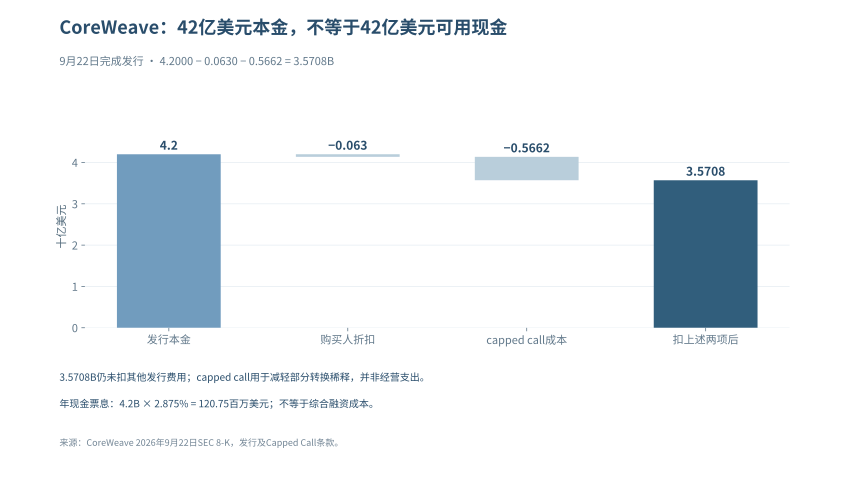

专题二：延迟与消化——多出来的时间究竟改变了什么
一个项目晚半年投产，一家模型公司晚一年上市，一个高估值行业又上涨几个季度，都可以被称为“延迟”，但三者并没有共同的现金后果。决定风险的，是多出来的时间里谁继续付款、谁推迟收款、资产还能否使用，以及新的需求是否足以补偿等待。延期可能扩大缺口，也可能让过早建设的产能得到消化；研究必须允许两个结局。
一、四种延迟，四张不同的现金表
工程延迟发生在土地、设备、供电、施工和验收之间。如果设备已经交款、债务开始计息、客户尚未起租，等待会增加资本占用；如果尚未下单的扩建可以推迟，或客户预付款承担了部分支出，现金压力又可能较小。工程延期不必然等于客户需求下降，更不能把计划MW全部按满额已投资处理。
客户部署延迟发生在试验与正式采购之间。试验有价值，不等于采购部门已给长期预算；模型能力达到要求，也可能卡在权限、数据、可靠性、责任和既有系统迁移。这里要区分没有需求、需求尚未证明、需求存在但交付困难，三者对应的收入与费用假设不同。
技术成熟延迟影响的是可收费任务范围。能力改善若比投资计划慢，继续训练、招聘和迭代会消耗资金；但成熟较晚也可能让企业采用更便宜的硬件和更有效率的架构，避免过早锁定技术。演示成绩、公开基准和生产验收需要分别记录，不以某一模型发布日期作为行业现金回收日。
融资延迟首先改变流动性。尚未完成的融资或IPO不能支付今天的账单；即便融资后来完成，也要看净所得、用途限制、利息和稀释。如果项目本身有正净现值，期限匹配可能解决问题；如果项目在合理成本和需求下仍无法回本，只延长偿债期便是把损失往后放，而非消化损失。
四种延迟可以同时发生，却不能每一种都重复增加同一笔设备支出。模型应保存原计划和最新计划，对每一笔付款、验收与收入起算分别移动日期，再检查现金谷底和剩余回报。
二、延迟如何放大风险：不是因为时间本身有害
最直接的机制是收入晚、支出不晚。设备和工程已经付款，项目又必须支付保管、维护、租金或必要人员费用，待起租时还可能面对新一代设备竞争。此时即便最终名义收入不变，现金流折现值也会下降；若客户因此要求降价或取消，经营损失会进一步增加。
第二种机制是承诺继续增加。企业为了维持规模目标，在已有项目尚未证明回报时又锁定下一批设备、电力和机房，未来不可取消付款的增长快于可动用资金与终端回款。真正的风险变量是新增净义务及可撤回程度，不是新闻中宣布了多少总投资额。不同合同之间有取消权、替代采购、押金和互相担保时，需要逐笔去重。
第三种机制是价值与融资相互牵连。旧设备租价下降导致抵押价值降低，贷款人要求更多权益资金，项目为了续建再发行股权；即使融资成功，原股东也可能承受更高摊薄。若担保方与设备供应方相同，原本被认为已完成的一笔销售又可能留下远期信用责任。是否形成闭环，要看担保触发和客户付款，而不能从投资关系图直接认定收入虚假。
第四种机制是好看的会计利润遮住了较长的现金回收期。延长折旧年限可以改变费用节奏，却不会改变已经支付的设备价格；投资重估可能抬高净利润，却未必带来经营现金。这个机制需要核对资产类别和会计估计，不能因为折旧年限长便宣告造假，也不能把折旧年限结束写成某年必然爆发的统一危机。
如果上述条件没有出现，只因市场仍未下跌就宣布“风险积累得更深”，这套判断将永远无法被推翻。
三、延迟也可能帮助消化：关键是损失承担与新增选择
假如扩建尚可取消，企业可以用较慢的建设速度等待客户付费验证，减少短期供给集中释放。即使资本开支增速下降，已有资产利用率仍可能提高；这是一种消化路径，不必先经历终端需求崩塌。检查重点是取消成本、现有客户承诺和维持竞争力所需投入，而不是把所有减CapEx都定义为坏消息。
技术效率也能改变同一批资产的回收。模型路由、缓存、量化或任务分配若使相同硬件服务更多付费任务，旧设备的收入寿命可能延长；如果效率收益大部分被竞争降价拿走，客户获得福利，运营商的现金回报则未必提高。只有用量、有效收费与单位成本合在一起，才能判定效率是在消化投资，还是在淘汰旧资产。
客户付费逐渐成熟，是最强的反证之一。需要观察同一批客户的真实续费、部署规模与现金贡献，而不是把新获融资、免费额度和短期促销全部计为持续需求。模型商新增收入若来自客户经营预算，云商投资回收便拥有不同于股东注资的来源；供应商融资可以是过桥，而非永续需求来源，这种可能应留在模型中。
长期资本还可能帮助跨过建设期。若资金期限覆盖工程和运营爬坡，既有投资有机会完成收费转换；但更长期并非更便宜、更无条件。主权资本、政策性支持和企业内部现金，都要核实实际出资、风险分担和退出条款。公告中的战略定位，只能说明意图，不能视为所有损失都会被承担。
四、一个可复算的等待模型
以下算例以货币单位计，未使用任何真实公司的预测。设今天投入100，原计划第一、第二年末各收净现金60，无终值，贴现率10%；净现金已包含经营成本与税，采用不含融资利息的项目口径。
| 情景 | 现金时序 | NPV | 解释 |
|---|---|---|---|
| 原计划 | t=0付100；t=1、2各收60 | 4.13 | −100+60/1.1+60/1.1² |
| 只有回款晚一年 | t=0付100；t=2、3各收60 | −5.33 | 收入未减少，价值因等待下降9.47 |
| 支出和回款全部晚一年 | t=1付100；t=2、3各收60 | 3.76 | 项目整体推迟，不能仅移动收入制造损失 |
| 等待使设备投入降至90 | t=1付90；t=2、3各收60 | 12.85 | 仅为采购降价足以补偿等待的示意，不代表现实会如此 |
这张表也提醒我们，延期时的现金需求与价值损失不是一个数字。第一个延期情景中，企业仍可能没有到期债务而安然等待；第三个情景净现值为正，也可能因支出时点早于融资到账而面临流动性问题。项目回报模型与偿债表应同时存在。
若另计等待期间的维护支出，需按发生日扣除；若借款利息已在股东现金流中扣除，不再用包含同一融资负担的方式重复处理。真实项目还应加入租约、税盾、违约补偿与残值，不能用本算例的10%贴现率代替所有公司的资本成本。
五、当前项目证据怎样约束延迟叙事
Akamai于2026年9月披露与Anthropic的七年11.6B美元协议及预计相关资本支出5.5B美元，说明建设支出和收入需要跨期匹配。11.6减5.5不能等于项目利润，因为合同服务成本、收付时点、税和折现尚未进入运算；大合同可以支持建设，也会要求先承担履约投入。Akamai，相关8-K及协议公告，2026-09
APLD在2026年10月7日披露10月1日新增75MW达到可服务状态，是不能忽略的交付进展；但其截至8月31日FY27Q1的HPC收入仍含装修和成本回收，投运容量不等于收费利用率，更不等于已取得全年稳定租金。工程节点、起租结构和集团现金应放在三条记录中。Applied Digital，FY27Q1业绩，2026-10-07
Oracle与STACK关于Jupiter的2026年9月30日声明称洪水未损害关键设施、项目仍按计划推进；10月23日Oracle又披露工程合同和已付款进度。两者是当事方的工程信息，不能写成独立验收，但也不允许只看洪水新闻便认定项目必然延期。取得设备上线、供电测试和客户验收材料之前，付款与GPU投产仍是不同状态。Oracle与STACK，2026-09-30声明；Oracle，2026-10-23工程进度
Anthropic公开S-1中的最低采购、含取消权合同和设备租赁，也不能合并成当天到期的同质债务。它们会在不同年份与收入、融资相遇；公开递表改善了研究可见度，但没有完成发行定价、交割和募集现金到账。Anthropic，2026-10-26 S-1，合同承诺及融资章节
上述案例的共同意义，是把“延迟是否危险”变成可核查的问题，而非证明行业整体会沿同一日历发展。供应商财报很强、部分项目交付改善，与其他项目现金被占用可以同时存在。
六、电力、政策与技术叙事为何会改变等待长度
电力约束可能使新供给较慢落地，保护已经接电的产能短期利用率，同时加重未投产项目的现金占用。全国用电预测无法区分这两种主体，必须落到项目所在电网、许可、接入设备、备用和用电合同。更远期的核能或聚变计划可以影响长期能源选择，却不能提前替代今天可用的电源；发电协议、建设融资、商业运行和可靠供电需要分别验证。
货币政策也存在双向影响。较低融资成本可能提高项目净现值、降低近期偿债压力；它也可能鼓励继续投资回报尚未证明的资产。较高利率会提高融资门槛，但若抑制低效新增建设，也可能帮助已有资产消化供给。政策效果取决于企业的反应，不能预设“宽松必放大泡沫、收紧必触发崩盘”。
技术叙事的变化更容易被误读。能力提高、新任务进入、机器人或其他实体应用扩展，确实可能让原先偏保守的需求模型失效；然而从能力演示到客户合同，还要经过可靠性、成本、监管和交付。另一方面，研究者也不能把所有新产品都当成转移注意力：若续费与现金证明新增用途，原有市场边界就应扩大。具体技术证据由AGI与变现章节核查，本章不把发布次数转换成概率分值。
七、历史提供的约束，而非“晚破一定跌得更多”
历史市场峰谷可以观察，但“如果当时不救助就只跌多少”不能从实际价格直接读出。拿这种未经识别的反事实跌幅作分母，所得放大倍数并不是统计规律；不同危机中的债务、银行体系、人口、产业和政策条件，也不能浓缩为统一的延迟年数。
同样，价格指数回到旧高点不等于每个投资者回本。总回报是否含股息、初始买入日、汇率、费用、税和通胀都会改变结果；指数更换成分后回到高点，也不意味着当年每家公司恢复。历史恢复期可以提醒人们不要把长期资产匹配短期资金需求，不能据此指定这一轮何时抄底、何时必然回本。
八、用一张项目表判断正在消化，还是继续累积
| 项目字段 | 更接近消化的方向 | 更接近累积的方向 | 缺失时的处理 |
|---|---|---|---|
| 已付款与未来硬付款 | 未承诺支出可调整，取消代价可承受 | 新增不可取消义务快于资金来源 | 不用新闻总投资替代 |
| 工程与起租 | 接电、验收、付费起租逐步完成 | 重复推迟但设备与维护继续付款 | 标记尚未验收，不把计划记实绩 |
| 终端客户 | 续费和付费扩张带来现金 | 回款依赖下一轮融资或更大补贴 | 不把ARR等同现金收入 |
| 资产用途 | 旧设备转用有真实客户和净现金 | 续租降价、改造成本与电耗侵蚀价值 | 保留残值区间，不设统一报废年限 |
| 融资期限 | 付款与偿债落在可见回收期之后 | 近期到期、抵押余量收窄 | 区分已签额度与可提款金额 |
| 股东回报 | 现金改善没有被维护投入和稀释抵销 | 项目活着但每股价值不断被摊薄 | 不以“未破产”替代投资成功 |
判断延迟的方向，应比较这些字段的净变化。延期伴随资金缺口收窄、终端付费改善和可选择支出增加时，应承认消化正在发生；延期伴随不可撤销义务、融资依赖和经济过时加重时，才有理由认为风险扩大。两种方向都还缺数据时，结论就是尚不能判定，不能靠重复一个更远的年份补足证据。
第二部分：资本循环网络——出资、采购、融资与担保怎样相互连接
观察截至2026年10月27日，北京时间。金额无特别说明均为十亿美元，GW为吉瓦。公告、签约、实际出资、交付与收入确认分别记录；没有执行证据的额度、担保和建设计划保持其原有状态。
一笔销售之后，谁还承担风险
NVIDIA在8月签署的OpenAI相关建设担保，风险上限可达105，首批义务预计到FY2029、相应机房具备服务条件并开始租赁后才逐步生效。设备供应商还为客户未来的土地、电力和机房支付提供部分信用支持，希望由此获得长期设备需求；一笔GPU销售完成后，双方的风险联系并没有结束。NVIDIA 8/17相关8-K
这不是105已支付，也不是105已违约。真正值得研究的是：建设未完成、客户不能履约、设备迭代或第三方不再承接时，各方分别承担什么义务。股权投资可能损失本金；授信可能尚未提款；多年采购只在履约进度中转成收入；担保有触发条件。把这些加在一起叫“循环融资总额”，会使风险识别失去最关键的期限与状态。
产业内企业互相采购并不异常，融资促成的真实交付也可以按照准则确认收入。研究的难处在于，供应链收入与外部终端付款之间还隔着多少次融资，以及哪一方最终承担项目不能赚回成本的损失。
2.1 三大循环关系网络
2.1.1 股权与商业合同：两条方向相反的线
| 资金或义务方向 | 法律/经济内容 | 研究上要问的事 |
|---|---|---|
| 云商、芯片商→模型公司 | 已出资股权或未来资本承诺 | 实际付了多少，何时支付，亏损由谁承担？ |
| 模型公司→云商 | 云服务合同、最低消费或容量协议 | 是否可取消，是否与供给性能或建设里程碑绑定？ |
| 云商/算力运营商→设备供应商 | 设备采购与付款 | 已交付和应收多少，账期是否延长？ |
| 外部客户→模型公司/云商 | 订阅、API、企业服务付费 | 是否覆盖推理、研发、基础设施与资本成本？ |
这张图中最容易被遗漏的是最后一行。前三行可以让建设持续一段时间，却不能单独证明整条链的投资回报。判断循环能否持续，最终要看圈外客户带来的现金，或外部资本是否愿意继续承担亏损与建设风险。
另一方面，不能把前三行每次付款都视为重复收入。芯片、基础设施和模型服务是不同产品，供应链各环节本来会分别确认收入。只有在测算最终市场规模、生态净融资或资本回报时，才需要做合并与抵销，而不是事后给全部合法营业收入贴上“虚假”的标签。
2.1.2 项目融资：设备与合同共同支持借款
算力运营商可以把GPU、客户合同及相关回款质押给贷款方，以贷款支付设备和建设。风险由客户信用、可实现收入、设备残值、利率和期限共同决定。客户信用强，并不保证设备期满续租价格；设备账面价值高，也不保证违约处置时能按账面值出售。
当债务期限长于底层客户合同，贷款便需要依赖续租、转租、其他现金或再融资。CoreWeave的DDTL 5.5贷款提供了具体案例，利率和还款风险应按单份合同分析，不能以某一笔高息贷款代表整个公司的债务。
2.1.3 担保与承购：融资风险向供应商回传
供应商承诺购买客户的未售算力、保证部分租金或支持机房建设，可以降低客户获得融资的难度。若第三方使用量上升，这些义务可能减少；如果使用量不及预期，原本的设备卖方又承担了下游现金支出。
因此，分析应同时保留有利路径与风险路径。前者是支持建设、交付增长、终端需求接上；后者是账面订单继续增长，但终端现金不足，新增投入只能继续由股权、债务或担保支持。区分两者，需要合同执行数据，不能靠几家公司在同一张关系图上互相连线就下结论。
2.2 核心交易明细：已执行与未执行分栏
下表不是完整的产业交易普查，只纳入有一手文件支持、且对研究结论重要的安排。不同栏之间不求和，同一交易后续变更也不能再加成一笔新交易。
| 关系/项目 | 可确认事实及统计时点 | 状态与边界 |
|---|---|---|
| Amazon→OpenAI股权 | Q1投入15；Q2再投入13.7；Q2 10-Q披露季后已付剩余21.3 | 合计50为逐笔出资序列；截至6/30已投入28.7，季后部分另列 |
| AWS↔OpenAI商业合同 | 原有38多年合同，Q1宣布扩大100、期限8年 | 商业安排，包含AWS芯片性能义务；不是Q2收入或同期现金回流 |
| Amazon→Anthropic股权 | Q2分别投入Series G 5和Series H 5 | 同期出资分列；不与融资轮总额重复求和 |
| Amazon→Anthropic后续融资 | 上限20，按算力交付里程碑逐步可用；H轮后剩余上限15 | 剩余额度不是已经提款15 |
| AWS↔Anthropic商业合同 | 10/26公开S-1披露：2026/5至2036/4最低消费110，实际使用不足时需按条款补差 | 更新同一合作的合同口径，不与Q2“扩大逾100”重复相加；并非已付现金 |
| NVIDIA→CoreWeave股权 | 1/23已完成2现金出资，每股87.20；1/26官宣 | 发生日与公告日不同，同一笔只计一次 |
| AMD→OpenAI/Meta权证 | 各最多1.6亿股，行权价0.01美元 | 截至6/27均未归属、不可行权；不是已付款或确定稀释 |
| NVIDIA→OpenAI相关建设信用支持 | 8月签约、总上限105；约4.25GW、分期生效 | 或有风险；不等于当期出资105 |
| NVIDIA与六家资本机构→独立算力融资平台 | 8/10宣布签署谅解备忘录，拟长期动员逾500第三方资本 | 目标，不是已募资或已提款；初步安排仍可能不形成最终协议 |
| Oracle FY27Q1扩建资金 | 当季CapEx 28.499；客户预付款11.363；ATM增发净到账19.909 | 预付款、股权资金和经营收入分开；不把融资现金写成项目回报 |
| Broadcom AI XPV | 初始35支持逾1GW；五年租赁Backstop全部部署后最大未折现潜在责任约29 | 29不是已付损失；42条件性可转票据截至8/2尚未发行 |
| Meta/BlackRock El Paso | 宣布80%/20%合资，约14开发成本；Meta租赁并提供残值担保 | 公告安排与交割、租赁开始分开，不能只凭持股20%称风险出表 |
| SoftBank→OpenAI股权 | 10/1第三笔10已执行，该轮30完成；累计出资64.6、约13%持股 | 10包含在30内，30包含在累计额内；不能相加，也不是OpenAI经营现金 |
资料：Amazon Q2 10-Q、CoreWeave 1/23交易8-K、NVIDIA 1/26公告、AMD Q2 10-Q、NVIDIA担保8-K、Oracle FY27Q1 10-Q、Broadcom FY26Q3 10-Q、Meta项目公告。
Anthropic的10月26日S-1已使Lambda、SpaceXAI和Nscale的部分合同进入可核范围，见2.7.2；文件披露的是合同义务与取消条件，尚未取得逐笔付款及全部实际交付，不能把这些数改作网络新增现金。Mistral等尚未逐笔核验的关系不列为已核交易，未列入不代表交易不存在。
融资平台一行的来源为NVIDIA与六家机构8/10联合公告及NVIDIA 8/26所报10-Q的Recent Developments。公告与定期报告相互补足的是目标及条款边界，不能算作两次融资；具体风险见2.5.3。
SoftBank10月1日公告确认，第三笔10由9月24日外币高级债融资所得支持，9月30日取消剩余10的未提款桥贷额度，桥贷借款已清偿。股权资金已进入OpenAI，但这不证明OpenAI项目经营回本；债券融资和随后股权出资是同一资金链的两端，不能合计成双倍生态新增资金。SoftBank执行公告
2.3 交易性质分层：金额为什么不能直接相加
2.3.1 五类义务的计量并不相同
| 类别 | 应记的量 | 不应替代成什么 |
|---|---|---|
| 股权出资 | 实际支付、账面值、未支付资本承诺分别记录 | 不把持仓市值当历史投入，不把额度当现金 |
| 债务/授信 | 已提款本金、未提款额度、利率、抵押和到期表 | 不把新融资额度全部当新增债务余额 |
| 服务/采购合同 | 剩余合同额、当期交付、已收/已付及解约条款 | 不把多年RPO、GW容量当当期收入 |
| 权证等客户激励 | 股数、行权价、归属条件、会计计量 | 不以目标股价×最大股数称当期现金融资 |
| 担保/残值承诺 | 最大风险、触发条件、开始时间和已确认负债 | 不把最大上限当必付损失或当期债务 |
把不同性质、不同期间、可能对应同一底层资产的金额相加，既算不出产业新增现金，也算不出最终损失。完整的风险账本必须先统一统计日、法律主体和计量对象，再决定哪些金额可以合计；目前公开资料不足以支持一个全网络净额。
2.3.2 现金逐笔流转，不等于可以追踪同一张钞票
如果云商投资模型公司，模型公司同时向云商买算力，两笔现金有相反方向，但公开报表通常不能证明“投资款恰好全部回流”。模型公司还可能支付工资、其他供应商、研发和税，资金又与其他投资人出资混合。商业合同可以说明绑定强度，不能自动提供逐笔资金来源的穿透证明。
反之，只要公开文件明确把融资额度与算力交付挂钩，就不能当作彼此完全独立的交易。Amazon对Anthropic安排已提供这样的直接线索：未来资金可用性与交付里程碑有关。风险判断应围绕哪些里程碑、供应商性能责任、终端客户付费以及未用额度的期限展开。
2.3.3 数据底表的最低要求
每条关系至少登记：出资人和最终风险承担者、收款人和法律实体、合同币种、公告日与发生日、已执行金额、剩余额度、期限、担保和退出条件、报表位置及原件链接。报表未披露的行填写“未披露”，不能用媒体摘要或总额差额补全。
只有在同一截止日、同一币种与净额规则下，才能做有限范围合计。例如，Amazon对OpenAI某轮的逐笔股权支付可以对账；它不能与AWS未来云合同再次相加，宣称公司已经产生同额AI新增需求。
2.4 合同与融资中的风险集中点
2.4.1 CoreWeave：股权支持之外，续租风险进入债务结构
NVIDIA的2现金出资在1/23已经完成，官方1/26公告把它与2030年前建设逾5GW的合作联系起来。股权交割与未来建设计划属于不同状态，后续资本支持应在各自实际发生时登记。成交8-K
更值得纳入当前正文的是8月DDTL 5.5：额度2.6、期限约5年，而底层客户合同平均约3年，利率为SOFR加5.50%。公司明确表示可以续约或转租给其他客户，但要满足信贷合同条件；公司认为这体现贷款人信心，也让它接触更广泛的客户。对研究者而言，这同时意味着合同期满后租价和残值风险进入了还款模型。8/10融资公告
10-Q的季后事项披露，这笔额度已提款1.2，不能继续只把2.6当作全部未使用承诺，也不能把额度2.6全部列作新增已提款。文件还区分有追索与非追索安排：DDTL 4.0为附有限例外担保的非追索结构，其他若干贷款受母公司担保，不能统称“已把风险完全放在项目公司”。CoreWeave Q2 10-Q，债务与季后事项
分析上的压力测试应保持简单而透明：若三年后原客户不续约，剩余两年需要由新客户净回款、设备处置或其他资金补齐。先估可出租设备的性能、单位租价和维护成本，再测利息、本金与契约约束；没有这些输入，不能仅凭“5年对3年”宣布违约，也不能因贷款超额认购就认定风险消失。
9月17日，公司又披露第三季度新签3—6个月客户合同，相关集群每兆瓦对应的年化收入约4000万美元。这支持短期算力租价仍强，却不是一年已收现金，也不是全公司统一租价；不能乘以全部4.2GW承诺电力来外推集团收入。公告同时重述的逾250亿美元新增承诺及4.2GW电力为8月既有披露，不再计成9月新增。CoreWeave 9月17日公告
9月22日已完成的可转债总本金为4.2，其中包含全额行使的0.5增购权；扣初始购买人折扣后所得约4.137，减去0.5662的capped call交易成本，余约3.5708，尚未扣其他发行费用。按2.875%票息计算，年现金付息约0.12075；2033年到期及转股条件影响资本结构，低票息不能与普通债直接相比后称为信用风险下降。CoreWeave完成发行8-K

这两条消息同时加强短期承接能力，也使期限问题更值得跟踪：3—6个月短约不能直接覆盖多年建设与还债，新增融资不能代替经营回收。上文约5年贷款与约3年客户合同是另一笔融资，不能假定这些新短约全部抵押给它；应分别建表，再看续租、替代客户和残值能否接住长期义务。
10月7日公布的印度项目仍处于计划阶段：CoreWeave拟在Navi Mumbai部署240MW、分三栋各80MW建筑，首期预计2028年中可用，另最多240MW只是扩展机会。不能写成480MW已经运营，也不能把公告重述的8月4.2GW承诺电力再算一次新增。对模型，它增加的是待跟踪的长周期交付与资金需求，公告尚未给融资金额或终端客户现金。CoreWeave印度项目公告
2.4.2 OpenAI—Oracle—NVIDIA：收入能见度与建设信用相互捆绑
Oracle FY27Q1已给出两面证据。IaaS收入7.388、同比增长121%，公司当季新增逾30的AI云合同，RPO由FY2026末638增至664；但664中约13%预计未来12个月确认，约37%在第13—36个月、34%在第37—60个月，其余更晚。RPO说明未来收入能见度，不是近一年现金或利润。Oracle FY27Q1业绩、Oracle FY27Q1 10-Q
建设端更能说明资金循环：当季资本开支28.499，经营现金23.103中包含11.363具有重大融资成分的客户预付款，自由现金流为−5.396；公司又通过ATM增发净募19.909，同时偿还4.202长期债务。8月31日短期借款7.625、长期借款117.712，合计125.337。现金和借款没有在本季形成即时流动性事故，但扩建明显依赖经营现金中的带融资成分客户预付款，以及经营现金之外的股权资金。
Oracle另有约288未起租租赁承诺，基本都是数据中心，预计FY27Q2至FY29开始、通常持续15—19年，尚未反映在8月31日资产负债表。它不能与RPO、当季资本开支或已确认租赁负债相加成“总风险”，却把客户履约、机房交付和资产残值的观察期拉得更长。
NVIDIA的SB Energy担保则把风险延长到建设和租赁阶段：105总上限对应约4.25GW，按不同机房开始服务逐步生效；客户付款后敞口递减，只涵盖明确的部分租金和电力付款，不涵盖整个园区成本。额外约3.8GW信用支持是NVIDIA可自行决定是否行使的选项，不能预先算成已生效担保。未来收入机会与风险上限也不是同一量，不能拿管理层预期的多代GPU销售额直接抵销担保。担保8-K
Broadcom 9月10日提交的FY26Q3 10-Q又把同一结构写得更直白：AI XPV以金融伙伴出资、Broadcom提供技术，弥合前沿模型实验室当前现金流与前置投资之间的缺口。初始35安排支持逾1GW；全部机架部署后，五年租赁Backstop最大未折现潜在责任约29，客户违约时按未偿Backstop的85%减处置机架价值计算。该责任公允价值目前不重大且尚无付款，因此29不是当期负债或损失。Broadcom FY26Q3 10-Q，Note 10及MD&A
同一文件还允许客户在特定条件且有需要时，向Broadcom发行总本金最高42的可转票据，所得只能用于客户的租赁义务；截至8月2日一张也未发行。这是新的条件性融资机制，不是Broadcom已经提供42融资、取得42应收或确认42收入。Broadcom另有126.821不可无罚取消、具法律约束力的采购承诺，主要是库存，其中FY2027为52.674、FY2028为72.952；公司没有披露其中AI占比，而且总额较上一季度略低，不能与29和42相加，也不能写成“本周新增198”。
Oracle、NVIDIA与Broadcom三条线共同提示的是集中度和期限风险，并非某家已经无力履约。对Oracle应观察RPO转收入、回款、建设投入与融资成本；对NVIDIA观察交付后应收、客户支持义务和担保是否触发；对Broadcom观察AI机架部署、租赁付款、票据发行、资产处置与采购承诺消化。公司现金垫能缓冲风险，但不能使一份长期或有义务失去经济意义。
Oracle与STACK于9月30日对Jupiter洪水的联合声明称，洪水到达园区，但关键基础设施未损坏、项目仍按原计划推进。10月23日Oracle进一步披露，截至9月30日已向30家新墨西哥州企业授予超过0.994的合同；10月23日公告另称迄今已支付超过0.160，未单列付款截止日。这比单纯建设目标多了一层实际付款证据，却还不是GPU投产或客户验收；合同授予额、已付款和园区总投资不能相加。Oracle/STACK洪水声明、Oracle工程与付款更新
供电许可仍是待兑现环节。10月15日Oracle与YGI提交燃料电池微网设计修订，称预计排放下降约35%、IT容量保持不变，但公告明确是对尚待批准空气许可申请的补充，不能写成许可已经获批。10月23日关于就业、投资和经济影响的预测也以空气许可及管线获批为前提；下一步应核许可决定、建设节点和客户接收，不用公司预测替代监管结果。微网设计与许可状态
10月26日Anthropic公开S-1补充了Broadcom交易另一方的设备租赁与母公司担保条款，见2.7.2，但没有据此把上文截至8月2日尚未发行的42条件性票据直接改成已提款。供应商Backstop、客户租金与潜在融资可能涉及同一批设备，必须逐项对账，不能合计成三份独立风险。
2.4.3 AMD—OpenAI/Meta：权证激励不能按目标股价折成现金
AMD分别向OpenAI与Meta发行最多1.6亿股权证，行权价0.01美元，归属与Instinct GPU采购里程碑、股价条件等挂钩。Meta最后一档涉及每股600美元门槛；这不是今天可兑现的每股价值。两份权证截至6/27均未归属或可行权，Q2 10-Q明确称其对当季及半年财务报表没有影响。AMD Q2 10-Q、Meta权证8-K
权证的最大股数、股价门槛与行权价描述不同条件，最大股数乘未来股价不能代表当期融资。芯片商通过权益激励争取大客户，采购扩大若触发权证，会影响后续股权与会计；实际影响要随归属、行权与财务确认逐期更新。
本期没有报表影响，也不等于未来只有股数稀释。AMD披露的处理机制包括相关收入确认时按授予日公允价值冲减收入，以及负债分类期间将公允价值变动计入其他损益；分类条件与当期状态需逐期核对。AMD 2025Q3 10-Q附注15
6GW是合作规模，亦不能无模型换算为900亿或1000亿收入。需要每代产品、交付节奏、单价与合同边界，且部分购买可经第三方进行。缺少正式总价时，本篇只保留官方容量和条件。
2.4.4 美光：锁定采购与客户押金不是同一笔收入
9月30日官方讲稿披露26份战略客户协议（SCA），金融承诺32B，但不是全部现金已收；约150B剩余履约义务（RPO）只计已有价格框架的协议，按承诺数量和最低价格计算。2027日历年HBM绝大部分bit供应已签约、约定价格同比显著上升，是公司的合同披露，不能扩大成全部产品售罄，也不能将RPO、金融承诺和押金相加。美光讲稿，第3—4、6页
FY2026融资现金流所列客户合同押金流入为12.747B；期末约12.7B客户现金押金与资产负债表12.895B非流动客户合同负债是不同字段。押金按融资分类，并在客户达到最低采购要求后于协议后半段逐步退还；它缓冲供应商建设资金，不增加本期经营现金，也不自动证明终端客户的项目回报。下一步应核合同兑现、返还条件及新产能支出，而不是给押金贴上永久利润的标签。美光财务表、官方讲稿，第8—9页
2.4.5 Akamai与Anthropic：七年合同的收入要在建设之后兑现
Akamai 9月24日公开的8-K记录9月18日签订的两份项目计划，Anthropic合计承诺约11.6B，各自从服务开始日起计七年，付款受交付、可用性及终止条款限制。备案在美东9月24日16:14:58被接受，折合北京时间9月25日04:14:58；公开时间与签约时间分别保留。SEC 8-K，Item 1.01、备案接受时间
公司预计相关总资本支出约5.5B、2026年增加约1.7B，而当年收入指引不变。这是明确的先建设、后确认收入安排，不宜用11.6减5.5当利润，因为运营、融资、税项和现金时序尚未计入；额外最多9B扩展只是潜在合同，并未完成。Akamai公告
权证首批40%以Plan 3首次付款等条件为归属前提，其余批次与新增合同挂钩，不能写成Anthropic已持有约5%普通股。同一备案还授权Jabil采购约1.7B内存，Jabil收到组件时，Akamai向其支付对应供应商发票金额；它不证明已经付款，也不应再与上述建设增量机械相加。需求承诺增强与供应商先垫资金可以同时成立，后续要核客户付款、实际交付、资金成本和取消条款，而不是只看合同标题。
2.5 收入溯源与逐主体现金模型
2.5.1 四层收入之间，不存在天然的一比一关系
终端客户购买应用，应用公司采购模型或云服务，云平台购买设备，每一层都可以有真实收入。但芯片销售常对应未来多年的服务能力，订阅与API付款通常对应当期使用，将设备收入与同年模型订阅直接相比，会把资本存量形成与当期消费流量混在一起。
| 层级 | 客户实际购买什么 | 可核的收入证据 | 需要另外衔接的量 |
|---|---|---|---|
| 终端付费与内部应用 | 订阅、软件交付、广告触达；内部应用则体现成本或效率变化 | 外部客户账单、收入确认、续费与收款 | 内部节约不能当作额外对外销售，广告收入不能全部归AI |
| 模型与应用服务 | API、代理任务、企业部署 | 合同履约、总额/净额确认、产品收入与服务成本 | 云渠道分成、训练投入、推理成本及客户留存 |
| 云与算力运营 | 实际可用的计算、存储、网络和托管 | 已交付服务收入、可用率、回款 | 最低消费、未履约合同、租赁与项目融资 |
| 芯片与基础设施 | 设备、组件、建设及安装服务 | 交付验收、设备销售、应收款 | 投产日期、利用率、更新周期、折旧与残值 |
这是一张分析口径表，不是行业规模估算。资金来自股权、借款还是经营回款，与产品收入发生在哪一层是两条不同的分类轴；备货也可能是对交期的合理反应，不能把库存、关联采购和外部融资分成互不重叠的“虚增收入份额”。因此压力测试应逐主体、逐期建立现金桥，不给未知循环率指定常数后用无限等比级数推导行业收缩幅度。
2.5.2 按主体重建资金桥
可操作的起点是每家企业的现金约束：
期末现金 = 期初现金 + 经营现金 + 新股权现金 + 净借款 − 现金资本开支 − 股权投资 − 股息回购 − 未计入前项的租赁及其他支付。
这里“净借款”已扣还本，不能再扣同笔本金；经营现金已经包含的利息与经营租赁，也不能重复扣。模型应直接贴公司现金流表与附注，再为项目投入、合同现金和担保付款建立到期表。
对某一项目，可以另算“现有客户合同覆盖期/债务期限”“未来十二个月可用现金/刚性付款”和“客户集中度”。这些指标能指出资金缺口在哪里，但阈值要由具体契约和风险承受能力确定，不使用跨公司统一的武断及格线。
2.5.3 NVIDIA承诺表：大数的意义在分类
7/26的10-Q将供应与产能承诺列为279、公司自用云服务29、未起租数据中心25、股权投资25和资本支出8，合计366；另列AI云协议36与拟服务第三方的未起租机房20，合计56。担保又单独呈现。这些是公司披露的不同合同类别，不能改名为“向客户循环注资422”。供应承诺主要涉及生产所需组件，亦有部分可取消、改期或调整但可能产生费用。NVIDIA Q2 10-Q，承诺附注
AI云协议的结构值得注意：云商购入NVIDIA基础设施，NVIDIA作出云服务承诺；云商可以将资源转售给第三方，NVIDIA义务随使用而减少，满足条件时还可参与收入分成。第三方使用与付款能否接住承诺，直接影响NVIDIA以后实际承担的现金支出。
供应承诺、客户支持和融资本金具有不同的风险含义；将它们除以营业收入，只有在分子性质、期间和执行状态均一致时才有比较意义。承诺规模很大值得关注，风险大小仍取决于执行时间、可调整程度与对手方。
8月10日公布的安排，拟通过融资平台引入更多外部资本。NVIDIA与Apollo、BlackRock、Blackstone、Brookfield、Goldman Sachs和KKR签署谅解备忘录，目标是长期动员逾500的第三方资本，并非六家各承诺500，也不是NVIDIA出资500。8月26日10-Q还限定：资金结构拟由资本机构独立承销和提供，初步安排可能无法形成最终协议；NVIDIA可自行选择，为部分特定项目提供有限残值支持。独立融资可能增加供给，残值支持又可能把部分风险留给供应商，不能把两面简化为“资金已经全部出表”或“全部由NVIDIA兜底”。截至10月27日，尚未核得平台最终协议及实际到账总额。联合公告、10-Q平台安排
这里尤其不能把500目标与105担保直接相加。10-Q及其附件10.1中的105上限对应俄亥俄州Piketon的SB Energy PORTS项目、约4.25GW租赁安排，不是六家平台的统一担保条款；项目是否包含在平台将来支持的资产中，公开资料尚不足以逐项去重。研究底表应先对应项目、法律实体和风险承担者，再分列平台募资目标、实际投入与担保上限，不把同一建设资产的融资和信用支持重复算作新增需求。10-Q项目说明、附件10.1担保文本
2.6 从电信历史到信用与融资窗口
2.6.1 与2000年前后电信设备周期的比较
| 比较维度 | 历史问题 | 当前核查方法 |
|---|---|---|
| 供应商支持客户 | 客户融资能促进设备销售，也可能把信用风险回传 | 股权、应收账期、承购与担保逐项拆分 |
| 长期需求预测 | 行业增长可能被多个主体重复外推 | 去重终端客户与容量，分开已交付与合同上限 |
| 库存和采购承诺 | 客户放缓时，供货商可能来不及调整 | 存货增长、减值、取消成本与延迟交货 |
| 现金缓冲 | 强现金能拖慢风险暴露，但不能替终端付费 | 现金、可变现资产、债务到期与或有义务 |
| 风险转移 | 项目与金融工具会改变谁承担损失 | 法律追索、担保、抵押物和关联交易 |
Cisco2002年报记录，2001年需求下降导致额外库存费用约2.2。它提供的是“订单预期突然失真时资产如何调整”的证据，不是所有设备公司必跌相同幅度的定律。与朗讯、北电比较时，还需单独重建客户贷款、坏账、收入确认和融资期限，不能把性质不同的信用支持压成统一风险倍数。Cisco历史年报
当下NVIDIA仍有强经营利润和正自由现金流，但其Q2回款节奏已与Q1不同，且客户支持形式更复杂；把它写成“现金垫绝对安全”或“朗讯翻版”都会丢掉最有价值的信息。历史类比的作用是提醒检查项目，而不是替代当前财报。
容量互换提供了比客户融资更严格的一条会计边界。SEC在2004年10月21日对Qwest的起诉与和解公告中，指控公司利用相互购买长期光纤使用权的交易，提前确认收入，并将一次性交易包装为经常服务收入；起诉书第89—95段具体说明了交换相似资产、提前确认销售收益、购买端资本化以及披露不足的问题。Qwest在不承认也不否认指控的条件下同意和解，不能把监管指控简写成所有行业互购行为都已被认定违法。SEC公告2004-148、SEC起诉书，第24—25页、第89—95段
由此检查AI合同，应先问交易是否具有独立商业目的，交付与控制权是否真实转移，是否有隐藏的回购、替换或退款条款，收入确认是否与履约义务一致，再问资金是否由供应商支持。客户融资主要增加信用与资本回收风险，缺乏商业实质或不当确认才进一步涉及会计真实性；二者可能同时存在，但不能从前者直接推定后者。
2.6.2 信用市场：保留价差信号，不制造因果时钟
发行利差、二级债券利差与单名CDS并非同一种价格，不同期限和币种也可能面对不同的流动性。信用跟踪应分别记录基准日期、债券或合约代码、期限、币种、报价来源和买卖价差，再判断变化来自无风险利率、信用还是市场成交条件。截至10月27日，本章未取得可核的同日终端序列，不给出当前CDS或债券价差趋势，也不由一个价差阈值推算违约倒计时。
“AI占投资级新发债约三分之一”也需要样本地域、发行定义、再融资是否重复及AI分类规则。未核到原始数据集之前，不把卖方比例改称一个正式独立信用行业，也不能据此推出养老基金已被动持有同等比例的AI风险。
已经可核的信用证据，是新合同的资金成本、追索与期限：CoreWeave DDTL 5.5按SOFR+5.50%定价，且借款期限覆盖了客户合同之外的年份。相较模糊的“信用裂缝扩大”，这能直接进入现金压力测试。
2.6.3 IPO：融资窗口是变量，不是既定时间表
Anthropic已于10月26日公开提交S-1，拟以ANT代码在Nasdaq Global Select Market上市；官方公告同时明确，发行股数和价格区间未定，注册声明尚未生效。这是公开递表，不是IPO完成或融资到账。OpenAI新一轮融资若仍处谈判阶段，也应等待正式成交与付款披露，不能提前把目标融资额放入可用现金。Anthropic递表公告、SEC S-1封面
上市可能为股东提供后续流动性，IPO募资、老股出售和锁定期又是不同现金流。即使一家模型公司推迟IPO，仍可能通过私募、债务或经营现金融资；相反，完成IPO也不能证明单位经济转正。因此观察栏保留“正式文件、募资与售股结构、锁定安排、实际收入披露”，不把未落定日期当硬触发。
2.7 Anthropic：公开递表以后，融资与采购终于可以分账看
2.7.1 私募估值、年化速度与已实现收入
Anthropic在5/28官网宣布H轮融资65、投后估值965，并称当月收入run-rate越过47。公告说明融资总额包含此前云商已承诺的15，其中Amazon为5；同时确认扩大AWS、Google/Broadcom TPU及SpaceX算力合作。该轮融资不是新增65再加云商15，也不是一次IPO。Anthropic H轮公告
47的run-rate只保留为5月时点的公司指标，不是现金收款或全年GAAP收入；965除以47得到约20.5倍，也只能描述当时私募估值与年化速度的关系。10月26日S-1已披露2025年收入4.585、2026年上半年收入16.286及相应财务表，中期数据未经审计，是新公开的旧期间实际值，不能被写成三季度业绩或当前年化收入；经营表现见第三部分3.3。SEC S-1，合并经营报表
2.7.2 合作伙伴增加，需分辨供应与资本风险
模型公司扩大算力来源，有助于降低单一平台和芯片路线依赖；同时多个供应商成为投资或基础设施伙伴，会让商业关系更紧密。其结果并非单方向：供应更可靠可能加速收入，也可能增加最低采购和建设承诺。
容量协议是否包含融资、租赁、保证采购或担保，要以各方合同附注为准。GW衡量设施规模，只有补齐交付、价格、利用率和合同边界，才能转化为收入或现金预测。
S-1的合同文字比容量口号更能说明现金压力落在哪里。下表来自MD&A第171—173页，反映截至递表时所述安排；有些合同在更早月份签订，10月26日是公开递表日期，不是全都在当天新增。
| 对手方与工具 | 披露金额、期间 | 最影响现金压力测试的条件 |
|---|---|---|
| Microsoft算力服务 | 至少44.9；2026/11—2033/5；2026/10再次修订 | 与实际用量无关的最低消费；未补救重大违约、未交付批次等为例外 |
| Google算力服务 | 至少114.5；2026/4—2033/7 | 未达消费额须按条款补差；另有2028—2031交付TPU预计支出125—150，金额取决于容量、部署和价格，不能当作同质固定承诺 |
| Amazon算力服务 | 至少110；2026/5—2036/4 | 与实际用量无关；存在补差及合同例外，不是当年费用或已付现金 |
| SpaceXAI算力服务 | 最多120.5，期限延伸至2029；全部交付后合计每月约3.1 | 全量交付预计2026/12；初始不可取消期分别至2027/1及2027/3，其后双方可提前90天通知取消 |
| Nscale与Lambda服务 | Nscale最多约44.6，期限延伸至2033；Lambda合计约41.3，期限延伸至2034 | 容量交付且被接收后才起费；融资、设施租约、服务可用性和分批交付各有终止条件；Lambda所列为合计金额，不按披露上限处理 |
| Broadcom五年设备融资租赁 | 租期内不含利息租金合计约161.2 | 通常设备ready-for-service后起付，特定场地延期情形可提前；专用子公司义务由Anthropic母公司担保，并有交叉违约条款 |
来源：Anthropic S-1，Infrastructure Service Arrangements与Infrastructure Equipment Leases，第171—173页。这些金额既有最低额、上限、估计支出，也有不含利息租金，服务与设备安排还可能相关；本篇不合计成一个“不可撤销总账单”，也不与各供应商RPO、担保及融资额度再次相加。
附注13另给出截至6月30日、剩余期限超过一年的未来固定或最低采购承诺约265.6，合同期限为1—20年。这个总口径有明确截止日和排除项，不能再与上表逐项求和；它也不能直接代表10月26日所有租赁、季后新增及可变容量安排。S-1证明长期付款约束已相当具体，但要判断能否覆盖，仍要把各年度实际交付、现金收款和取消条件排进同一张时间表。S-1附注13，F-59页
2.7.3 Amazon持仓重估已经有Q2实数
Amazon Q2 10-Q已经提供实际投资与重估，第一部分据此拆分经营和非经营。私募总估值不能乘一个固定持股比例后线性外推成未来各季净利润，因为融资轮之间的证券权利、稀释与计量方法可能不同。
下一次融资若价格下降，也不一定按持仓比例机械冲减当季利润：证券权利、会计计量、可观察交易、减值与税项共同决定实际结果。可以设置“估值下降会怎样影响净利润”的情景，但必须标明假设，不把它当成公司已经会发生的会计分录。
2.7.4 商业化要验证的不是名义估值本身
Anthropic未经审计的2026年中期报表披露，上半年实现收入16.286、经营亏损0.693，其中Q2经营利润0.974；同期间净亏损80.748，却有经营现金净流入3.929。合并现金流表分别调回72.388的可转票据、衍生负债及SAFE公允价值变动，以及8.720的其他金融工具确认和公允价值变动，因此净亏损不能称为同额现金烧钱。上半年融资现金流110.774属于外部资金来源，投资现金流−17.181包含证券购买，也不能直接标为建设CapEx。Anthropic S-1，合并经营及现金流量表、MD&A第169—170页
单季经营转盈和半年正经营现金是重要的反证，但现金仍受收付款时点影响。判断可持续性，需要将渠道收入确认、训练及推理成本、付费留存和算力交付后的最低付款排入同一时间表，不能拿半年的正现金直接证明未来多年承诺均可覆盖。
同理，不同模型在不同年份的每百万token价格，不能未经能力、输入输出、缓存和推理设置匹配，就称“同等能力价格下降99.7%”。价格竞争仍是机制，但单位经济判断要使用可比任务的收入与全部服务成本。
2.8 Alphabet融资：从初始计划更新到实际执行
2.8.1 初始80方案真实，完成值却不是80现金
6/1自由书面招股材料提出总计80的初始权益融资方案：30承销发行、40 ATM市价发行计划和10伯克希尔私募。该方案确有SEC原件，不应因规模大就直接判为假消息；但“宣布”与“已募得”必须分开。6/1初始方案
| 项目 | Q2 10-Q披露的执行结果 | 正确解读 |
|---|---|---|
| 6/4公开普通股发行 | 净募集约20.5 | 已完成，净额口径 |
| 6/4伯克希尔关联公司私募 | 募集10.0 | 已完成，不是公司自身“关联方循环回款”的证据 |
| 6/5强制可转换优先股 | 净募集约19.0 | 已完成，有其股息与未来转换条件 |
| ATM计划 | 上限40；截至6/30未发行 | 可用工具，不是已进入银行账户的现金 |
股本附注的分项取整值合计约49.5；现金流表则列普通股发行净额30.499、强制可转优先股发行净额19.063，两项合计49.562，与管理层概述的约49.6一致。不能用已取整的20.5、10.0和19.0反推精确到账，也不能把股东权益变动表的入账额直接当现金收款。Alphabet Q2 10-Q，现金流表及股本附注
10-Q把ATM潜在募资用途主要描述为员工股权奖励相关税务义务，而普通股和优先股已完成融资用于一般公司用途，包括扩大AI基础设施。8月补充文件新增销售代理，并明确其他条款不变；它没有披露新增40额度，也不是执行完成证明。ATM补充文件
2.8.2 外部融资增加，不等于公司濒临现金断裂
Alphabet截至6/30长期债务账面值98.165，年末为46.547；现金及有价证券242.474，但其中可出售限制、市场风险与现金本身不同，不能全部视为随时可用的现金。扩大的融资工具与增长中的建设投入并存，说明公司选择改变资本来源，尚不能单凭发行股票判断被迫续命。
8/6最终债券招股补充文件列示25高级无抵押票据，覆盖2028至2066年到期档，预计8/10交割。它证明融资条款和发行安排已落定，不能仅凭这份事前文件声称已逐美元收到募集资金；后续资产负债表和现金流再确认其执行。此处也不将它与6/30债务余额直接相加作为10月27日精确净债务。25债券最终文件
对股东更实在的影响是潜在稀释、优先股股息、债务利息以及这些资金买来的资产能否获得足够回报。股权融资可能改善偿债能力，也可能让现有股东分到更少未来利润；评价融资应同时问价格、资金用途与项目回报，而不是给所有融资贴“顶部动作”的标签。
2.8.3 伯克希尔参与不是循环交易的充分证据
伯克希尔关联公司是外部出资方。仅因其投资Alphabet，就称“超出公允定价的关联性投资”并纳入云生态内部循环，没有合同和公允价值分析支持。持股也不能被直接写成Abel对某家技术路线、其他巨头或未来股价的官方判断。
战略投资人的参与、融资稀释、公司业绩和整体市场环境可能同时影响股价；缺少事件识别模型时，不能给任何一个因素分配精确涨跌贡献，也不能把某几家公司的融资动作当成可靠的市场顶部信号。
2.9 事件总判断：风险向哪里移动，而不只是金额变大
2.9.1 Meta El Paso：股权占比不能代替风险占比
7/28公告中的El Paso项目预计2028年起分阶段投入使用，约14开发成本，BlackRock管理资金持80%、Meta持20%；但Meta拟租用整个园区。租赁初期4年、可选延长至20年，同时提供初始阈值约13、随时间递减的残值担保；一定条件下，担保付款与届时资产公允价值不足额有关。BlackRock一侧融资12.5，与Meta担保上限不是同一个项目的两笔独立债务。Meta项目公告
这项安排能减少某一主体直接持有的建设资产并引入长期资本，也会留下租赁与残值风险。要判断经济上是否去杠杆，须看交割、会计控制权、租金、担保触发和资产残值，不能因Meta只保留20%就宣布80%风险已转走。截至10月27日，尚未取得独立交割回执，证据状态为公告安排。
Meta Q2 10-Q还披露未起租租赁278.99、不可取消合同承诺349.31和条件性云容量购买义务至多14.72。它们期限与覆盖范围不同，部分可能重叠，不能合计成同一“总债务”，也不能把美元十亿误写成中文十亿美元的十倍。Meta Q2 10-Q，承诺附注
10月21日Meta随Q3业绩宣布新增无投票权Class C股类，拟于2027年1月19日使修订章程生效，并在条件满足后对每股A、B类股派发一股C类股；股息登记及支付日仍待董事会确定。公司解释新股类可用于后续融资、员工薪酬或并购，但设立股类和派股本身没有带来融资现金，不能把它写成已完成增发募资，更不能据此判断El Paso项目已经交割。Meta Q3公告，Establishment of New Class C Common Stock
2.9.2 建设、电力和芯片：不同的锁定程度
电力与长期机房合同可能具有照付不议或终止成本，设备订单则可能在未形成正式采购前调整。Alphabet担保支持交易对手采购长交期电力设备，NVIDIA供应承诺也披露部分可改期；不能把全部CapEx写成绝对不可逆，更不能以物理供给不足推出需求一定持续。
交付受限时，应继续拆分许可、建筑、电力、设备和客户验收：每一环节的延期会把不同付款推后，或产生不同终止成本。只有对应到具体合同，供给约束才进入现金模型；新闻中的投资意向或远期容量不能直接替代这些节点。
HBM等关键组件涨价还会改变链条内部利润分配，但这种传导不是零和恒等式。上游价格上涨可能被GPU供应商转嫁给客户，也可能被产品结构、良率和系统价值提升吸收；同时出现上游与GPU供应商盈利增长，不能单凭某一方涨价便宣布另一方利润被同额夺走。检验利润迁移，需要同代产品的物料成本、采购价格、实际售价及毛利桥，而不是将某个HBM成本占比套在全部AI资本开支上。美光已实现的现金、三星尚属初步估计的利润，以及NVIDIA不同财期的毛利，应各按自己的期间和范围分析。
2.9.3 当前有证据的结论与尚无证据的结论
已有证据表明：模型公司融资与算力供给关系紧密；供应商的下游支持从股权延伸到云协议和建设担保；部分项目借款开始承担合同期外的续租风险；强现金平台也使用股权、债券和合资工具分配建设资本。这些是资本结构复杂化的事实基础。
尚未由公开材料证明的是：整个网络真实净回流率、最终外部客户现金贡献、统一的循环收入占比，以及一个可以可靠预测崩盘的乘数或时间点。本篇不据新增合同自动提高泡沫分数，也不从同一事件同时推导“更快崩盘”和“更晚崩盘”来保证结论永远正确。
后续最有辨识力的证据，是Oracle FY27Q2对增长指引的兑现、288未起租租赁承诺何时开始，Broadcom AI XPV机架部署与42条件性票据是否发行，以及各公司季度回款、新投资实付、AMD权证归属、CoreWeave续租、Meta项目交割和NVIDIA担保生效里程碑。它们可以检验资金是否接上实际交付，单纯扩大公告总额做不到这一点。
2.10 我可能错在哪里
公开报表很难把同一模型公司经不同云平台购买的算力完全去重，也难以追踪股权资金与商业付款逐笔对应。这限制了网络量化，不是可以靠估计总额掩盖的小缺口。
合作关系也可能创造效率：更稳定的供给、共享研发和更多客户入口，能使本来独立经营时不可行的项目获得正回报。如果外部付费和现金回收持续增强，融资支持可能是建设期过桥，而不是不可持续需求。相反，若客户用量增长但单位价格和利润不足，融资仍可能掩盖回报压力。
对风险的判断应在证据改善时下降，也应在账期、融资和履约恶化时上升。当前可以说信用联系比单纯买卖更深，不能说它已经证明收入虚假、崩盘必然或任何一家公司会违约。
附篇A：研究框架与方法论
AI 产业周期研究框架：融资关联、物理交付与资本回收
本框架追踪的不是一张越来越大的资本开支支票，而是一组要按期完成的转换：融资到账之后能否买到设备，设备能否接电并交付，交付能否形成收费使用，收费使用能否留下足够现金。只要其中一环变慢，前面确认的订单和收入就可能与后面的资本回报脱节；反过来，某个环节出现压力，也不能直接证明整个产业的终端需求已经消失。
本篇以财务结构、供应链交付和资本回收为主线；公司事实采用截至2026年10月27日取得的文件，各自报告期仍分别保留。历史案例只用于检验机制，文中给出原始年份，不充当当期行业统计。这是一套研究工具，并非经过频率校准的“AI崩盘概率模型”。
一、研究方法论
证据来源和命题性质分开标注
一份公司文件可以同时包含已确认收入、尚未付款的合同、管理层未来指引和风险提示，不能因为文件来自证券监管系统，就把四者都标成已经发生的事实。每项核心数字应保留两个标签：来源是否可追溯，以及命题属于事实、预测、假设还是判断。
局部短约的每兆瓦年化收入不能乘全部承诺电力，因为合同期、投运率和客户价格不同；可转债本金、扣折扣后所得和再扣对冲交易成本后的可用现金，也不能互相替代。先确定分子、分母和现金分类，再做算术，避免得到精确但无意义的总量。
| 命题性质 | 应保存的原始信息 | 不能替代什么 |
|---|---|---|
| 已发生事实 | 报告期、会计口径、币种、附注或公告条款 | 不能把单季结果直接当未来全年结果 |
| 公司计划或指引 | 发布日、适用期、范围、条件和后续修订 | 不能当成已经付款或已经交付 |
| 外部预测 | 机构、模型样本、期间、情景、关键假设 | 不能升级为公司承诺或市场事实 |
| 作者判断 | 所依据的事实、推导、反证和缺失变量 | 不能用来源数量替代推导的正确性 |
原始合同、监管文件、官方财报和统计机构资料优先用于确认条款和已发生数据；媒体和研究机构提供事件线索、专家解释与预测参照。可追溯的一手来源优先，但公开披露也未必足以看穿最终付款方、客户毛利或项目回收期，这些缺失必须明确留白。
跨机构对账的门槛不是“都属于三星证据”，而是主体、期间、币种、现金与非现金分类、总额与净额，以及交易边界一致。三家机构可能采用同一组公司指引，不能把三篇引用共同信息的预测当成三份独立证据。
先拆财务性质，再统计暴露
| 类型 | 必须核对的条款 | 台账中的位置 |
|---|---|---|
| 股权和贷款 | 实付额、分期交割、未提款余额、到期与回收条件 | 已支付资产与未支付承诺分列 |
| 设备采购、云消费 | 最低购买量、取消权、交付验收、结算进度 | 合同义务与实际采购、付款分列 |
| 预付款 | 是否可退、是否抵未来账单、收款方用途限制 | 现金已到位，但不等于已确认收入 |
| 残值担保、信用支持 | 触发条件、最高责任、期限、补偿权与抵押物 | 或有暴露，不并入当期现金支出 |
| 认股权证 | 归属和行权条件、公允价值、会计分类、潜在稀释 | 与采购优惠、财务报表影响一起审查 |
股权投资可能多年分期到账，云合同也可能跨多个硬件更新周期。买方的资本开支与卖方的设备收入是同一笔交易的两侧，若还要纳入终端客户的应用付费，必须先画清产业边界，否则同一笔钱经过三个环节，会被误认成三份独立需求。
二、融资关联网络：从“大数”改为现金依赖与或有责任
关联结构不等于虚假交易
供应商向客户投资、客户购买该供应商设备，首先说明融资和业务关系交织；它既可能降低采购不确定性、加快真实产能建设，也可能让销售增长依赖持续融资。双向合同、相近金额和身份重叠足以触发审查，却不足以证明注资已经完整回流，更不能据此推断欺诈。
研究要分清三层：已经披露的关系网络、能够逐笔核对的资金流，以及发生客户违约后由谁承担损失。只有付款、回款、合同履约和最终外部客户收入能接起来，才能判断终端现金是否足以支撑这张网络。
两个已核实案例：担保与认股权证不能当成现金投资
英伟达 2026 年 8 月 17 日的 8-K 披露，在 SB Energy 的 Portsmouth 项目中，OpenAI 为租户，初始残值担保涉及约 4.25GW IT 负荷，累计付款责任上限为 1050 亿美元，受项目达到可服务条件等约束，相关条件预计自 2028 年起满足。担保针对违约后的约定最低价值与替代出租或出售回收之间的差额，文件还载有补偿与终止条件；因此，它是要跟踪的长期或有责任，不是英伟达当期已支付的 1050 亿美元投资，也不是同额预期损失。英伟达 2026-08-17 8-K
AMD 与 OpenAI 的安排则体现了采购和股权激励的结合。2025 年 10 月披露的最高 1.6 亿股、每股 0.01 美元认股权证，分批归属条件包括采购里程碑、股价与技术商业条件；文件明确的初始约束采购承诺为 1GW，达到全部归属需要最高 6GW 对应采购等条件，不能把最终目标全部当作已经交付的订单。AMD 2025-10-06 8-K
会计上也不能只说“没有现金、只有未来稀释”。AMD 2025 年第三季度文件说明，该认股权证授予日公允价值会在相关收入确认时冲减收入，负债分类期间的公允价值变动进入其他收益或费用；2026 年第二季度文件则披露，截至 6 月 27 日，OpenAI 与 Meta 各自最高 1.6 亿股的权证均未归属、未可行权，当季及上半年尚无报表影响，且在满足股权分类条件前按负债分类处理。前者是处理机制，后者是截至报告期末的状态，均不能延伸成“永远不影响收入”。AMD 2025Q3 10-Q，附注15；AMD 2026Q2 10-Q，Warrants
这两个案例要求模型新增两张表：一张按季度记录合同现金流，另一张记录在特定条件下才发生的支付和股权变化。不能用“当期尚无影响”排除未来风险，也不能用“未来上限很大”证明当期已经发生损失。
三个风险集中点
第一，客户的采购能力是否依赖下一轮融资。 跟踪非融资性质的客户回款、经营消耗、可用现金、已承诺授信和未来十二个月必须支付的采购及债务。新增融资能缓解流动性，却不能代替客户单位经济性改善；若付款依靠股东继续投入，研究应记录这种依赖，而非把所有新增订单都视作成熟终端需求。
第二，设备和项目能否在融资期限内变成可收费产能。 设备付款、机房建设、接电、验收和客户起租可能由不同公司承担，建设延误未必取消最终需求，却会拉长现金流缺口。GPU、冷却设备、土地、电力接入权和租约的可回收价值也不同，不能用一个折旧年限统一替代。
第三，出现违约时风险是否回到上游。 承购、担保、预付款、回购或补偿条款可能把客户信用风险传回设备商。压力分析要列出违约触发、可替代出租、抵押物回收和补偿权的可实现性，区分合同名义上限、会计确认金额和情景损失。
例如一个纯示意的差额担保，若约定保障金额为 G、违约后可实现的净回收为 R、责任上限为 L，可先估算条件支付额为 min(L, max(0, G − R))；实际合同还须加入已支付额度、履约条件和终止条款。不能直接用责任上限乘某个未经校准的概率，生成看似精确的行业损失预测。
与电信设备融资周期的比较保留什么
与电信设备融资周期比较时，研究对象应是供应商融资、客户信用与设备残值之间的关系。融资分子必须区分贷款、股权、承购和担保，营收分母必须对应相同主体和期间；没有统一样本，规模倍数便不能衡量危机程度。
真正应比较的是：客户由谁付款、收入是否以交付验收为前提、上游是否承担兜底责任、债务何时到期、设备能否转卖，以及核心业务现金流能支撑多少新增项目。云商成熟业务现金流和新兴算力运营商的融资条件明显不同，应分层研究，不能由最弱参与者的融资压力推导全行业同步违约。
三、供应链物理层：用可交付产能解释收入时点
HBM 与封装：不同分母不能互相替代
高带宽内存（HBM）的单位容量、带宽、良率和供货条件，会影响加速器成本和交付节奏；但单颗 GPU 的物料成本占比、服务器采购价格构成与云商全部资本开支结构是三个不同问题。公开资料尚不足以复原统一的全行业物料成本和纯AI资本开支分母，因此本框架不提供一个貌似精确的HBM全行业占比。
保留以下成本传导模型，而不预先指定利润一定流向谁：
单台服务器采购成本 = 加速器及配套板卡 + CPU/内存 + 网络 + 机柜和其他部件。
项目资本支出 = 服务器及网络采购 + 机房、电气和冷却建设 + 应资本化的其他项目成本。
如果加速器采购价格已经包含 HBM 与先进封装，就不能在项目投资中再次加上存储厂和封装厂的销售额。判断 HBM 厂商能否扩大收益，要分别检查产品组合、议价方式、单位成本和新增产能，而非只看总营收或全公司毛利率。物理瓶颈可以重新分配供应链利润，但它本身不是循环融资的证据。
电力约束：单位与地域边界
美国劳伦斯伯克利国家实验室 2026 年 6 月发布的《美国数据中心能源使用报告：2025 更新版》，给出的 2030 年参考情景为年用电 649TWh、约占美国总用电 11.8%；综合不确定性区间为 521–843TWh、9.5%–15.3%。这是包含不同类型数据中心的预测，不是纯 AI 的实际消耗，也不是已经签约的电力需求。其参考情景依赖设备出货、运行与冷却等模型输入，不能把报告名称中的“2025”当成统计终点已经全部实现。LBNL 官方报告页面，2026年6月
TWh 是一段期间的用电量，GW 是功率：649TWh 若按一年 8760 小时折算，平均负荷约为 74.1GW，但这仍不是机房铭牌功率、IT 设备容量或可并网容量。机房峰谷、利用率、冷却开销和当地可靠性要求会影响所需容量，不能将不同定义的功率简单相减为全国缺口。
上述美国预测与IEA全球2030年950TWh中心预测，出自不同机构、发布时间和模型假设，尚未形成地区分项对账。不能直接以649除以950推算美国份额，或将两者拼成一套地区总表；前者用于观察美国敏感情景，后者用于讨论全球方向，差异本身应保留为模型核对项。IEA 2026年4月预测
全国总量只告诉我们需求可能很大，项目能否如期交付还要看所在电网。按项目记录五个日期更有解释力：供电协议落实、关键设备交付、建设完工、接电验收、客户开始计费。表后发电（BTM）、储能或跨区域调度可以缓解部分问题，但还涉及燃料、排放许可、备用和系统可靠性，不能把备用燃机装机容量全部当作全年可供电能力。
电价上升也不必然一比一传导至 API 价格。运营商可能用效率改善、模型路由和产品组合消化成本，也可能以利润率下降承担压力；只有具备需求和议价基础时，才能稳定转嫁给客户。应同时看同质量任务的收费、单位任务能耗和履约成本。
先进封装：从“全行业排队”改为分技术交付
CoWoS 等先进封装的重要性不变，但必须分别记录技术类型、产能定义、实际产量、良率、客户认证与产品尺寸；晶圆片数、封装件数和可交付加速器数量不是同一个单位。大尺寸产品占用的工艺资源可能更多，月度名义产能增长也未必同比例变成交付量。
产能预订、交付等待与停止接单是不同状态。拿不到原始订单规则、适用产品及产线时，不能由一个客户的排期推出全行业停止接单，第三方产能预测也不能标成台积电的已实现产量。
对于每一家受影响公司，模型改问四件事：已锁定哪一种封装、交付瓶颈在哪里、延迟会影响哪个季度的收入、是否有替代工艺或客户验收条件。库存增加若来自交付前备货，含义与成品滞销不同；客户预付款、供应商预付款和设备到货则帮助判断双方是否真正进入执行阶段。
四、资本开支三层拆解与现金回收模型
三层结构与去重
| 层级 | 研究的资产 | 必须剔除的重复 | 现金回收线索 |
|---|---|---|---|
| 计算与网络 | 加速器、服务器、网络和配套存储 | 芯片内部HBM和封装若已含在售价，不再叠加 | 可计费利用率、有效单价、单位成本和更新频率 |
| 数据中心物理设施 | 建筑、电气、冷却、机柜等 | 租入资产与出租方同一建设支出不重复统计 | 已接电容量、起租、入住率和维护资本开支 |
| 外部能源与接入 | 发电、输配电、接入及相关设施 | 云商资本开支与公用事业投资分主体；PPA不直接全部当CapEx | 投产、购电合同、资本回报安排和费用承担者 |
全球投资总盘仍未核定。即使机构预测各有出处，也要统一时间窗口、国家、是否包含电力及建设、现金购买和租赁资产确认后再对照。若没有原始报告和分项附表，就保留“未核定”，不以三家机构方向一致补足金额证据。
自下而上核算时，从每家公司的现金流量表、租赁附注、指引和项目公告建立桥接表。现金购建资产可以用于现金融资需求，新增融资租赁资产用于经济投入规模，两者若在不同期间发生，必须避免把资产初始确认与未来租赁本金再次相加。不同公司的“资本开支”若包含不同项目，先展示差异，再提供可比子集。
TAM 是需求空间，不是归属于出资人的现金
可寻址市场（TAM）是某一价格、用户和渗透率假设下的潜在年度需求，既不等于实际确认收入，更不等于设备采购者能够取得的自由现金流。终端客户付给应用商的钱，可能又被用于云计算、模型接口和设备采购；跨产业链总收入不能反复相加后拿去覆盖某一层资本投入。
同一终端年度收入目标，不同爬坡过程会产生不同累计收入。下面设终端年收入为100个货币单位，仅演示时间路径，不代表AI市场规模预测。
| 假定的收入路径 | 五年累计收入 | 终端年收入为100的算例 |
|---|---|---|
| 五年每年从一开始都达到终端年收入R_T | 5 × R_T |
500 |
| 连续五年从零线性升至R_T | 2.5 × R_T |
250 |
| 五个年度分别为终端值的20%、40%、60%、80%、100% | 3 × R_T |
300 |
如果初始年度收入不为零，必须把初始值一起写进模型。连续线性路径的一般式为 累计收入 = 期间长度 × (初始年化收入 + 终端年化收入) / 2；若按年度离散记录，就逐年相加，不能混用连续面积和年末数值。
回报率必须从逐期现金流算出来
收入除以累计资本开支，最多是两个同币种金额的粗略比值，没有扣除运营成本、税费和再投资，也没有时间价值，不能命名为资本回收倍数，更不能据此断言内部收益率（IRR）为负。完整模型应以同一公司或项目为边界，记录每期真实可归属的经营收益与投入。
采用企业自由现金流时，可用：
FCFF_t = EBIT_t × (1 − 税率_t) + 折旧摊销_t − 资本开支_t − 营运资本增加_t。
税项在亏损、递延税或有税盾时要单独建模，不能机械套用正利润税率。折旧先在营业利润中扣除，再作为非现金项目加回；资本开支已经扣过，就不能再把折旧作为第二次现金投资扣除。FCFF 口径不再扣融资利息，融资成本通过与该现金流相匹配的折现率反映；若改用股东现金流，则须另建债务与利息表。
净现值（NPV）按 Σ CF_t / (1+k)^t 计算，包含初始投入及后续现金流；IRR 是使该净现值等于零的折现率。对于多次正负转换的现金流，IRR 还可能不唯一或不存在，应优先展示给定资本成本下的 NPV。期末仍可使用的资产和经营业务可以有终值，但不能既计入继续经营终值，又重复加入同一资产的变卖价值。
纯示意：若初始投入 100，随后五年每年末取得项目净现金流入 25，期末无残值，则未折现累计流入为125、相对初始投入为1.25倍；在10%资本成本下，NPV约为 −5.23，IRR约为7.93%。这说明“累计现金大于投入”也不等于达到资本成本，更不用说仅凭累计收入判断回报。
若初始投入仍在今天支付，这五笔25的回款却全部延后一年，在没有新增收入、成本、残值或违约变化的假设下，NPV进一步变为约−13.85。未折现累计收入或现金都没有减少，价值仍损失约8.62；若延迟还伴随维持项目的现金支出，必须另扣。这个差额来自收款时间，不需要先假定终端需求归零，也不是对真实AI项目回报率的估计。
现金缺口、RPO 与折旧分别看
资本开支/经营现金流（CapEx/OCF）在同一期间且 OCF 为正时，可以衡量经营现金对投资的覆盖压力；它不是违约概率。如果分母为负或接近零，应直接展示现金缺口，避免一个巨大的比率遮蔽实际规模。比较时同时列出现金余额、未来到期债务、资本支出、分红回购和已落实融资。
简化期末可用现金 = 期初可用现金 + OCF − 现金资本开支 − 到期债务本金 − 分红回购 + 已落实新增融资 + 其他净现金流。
这里的“已落实”需要区分签约额度与实际可提款条件。利息若已经计入所用 OCF，不再重复扣除；融资租赁本金如未包含在现金资本开支中，应在其他融资流出中单列。未受限现金和受限现金也不能等量抵消近期付款需求。
剩余履约义务（RPO）主要是尚待确认收入的合同存量，不是可立即动用的现金。RPO 除以年度 OCF 具有年数含义，若除以单季 OCF，还要说明是否年化；本篇没有可核实的通用自动降级阈值。评级判断需要具体公司、期限、现金覆盖和评级方法，不能把某项比率搬给另一项指标使用。
更有用的 RPO 分析是看合同确认时间、履约成本、预付款、取消或续约条款和交易对手信用；折旧分析则看资产寿命、更新速度、减值和维护投入。CapEx 与折旧接近既不能证明建设见顶，也不能证明必须依赖外部融资，它只是需要放回资产与现金流上下文的一项信息。
五、框架如何使用，何时承认它不够用
同一张监测表保留三种可能
| 要检验的路径 | 需要共同出现的证据 | 不能单独定性的信号 |
|---|---|---|
| 投资逐步被消化 | 可计费利用率、客户留存与现金毛利改善，融资依赖下降 | 只有CapEx继续增加 |
| 需求存在但回报承压 | 使用量上升，单位收费或有效利润率下降，更新投入持续 | 只有API降价或Token增加 |
| 信用和供给收缩 | 付款/起租延迟、融资条件恶化、订单取消或硬支出削减相互印证 | 单个交易日股价下跌 |
每次更新至少回答：新事实改变的是收入、成本、时间，还是融资结构；应调整哪一个模型参数；原有判断的哪一条反证被触发。这样才能避免同时看到好财报和融资风险时，只选择与既有立场一致的一侧。
证据表还应分开记录“报告期”和“最近核对日”。9月重新读取6月季报，只提高这条旧数据的可追溯性，不把它变成9月实绩；融资MOU的后续状态没有取得时，沿用的是最后已核阶段，不是默认已经交割。事实状态、模型参数变化与情景权重调整各留一条记录，防止补到一份旧公告就被重复记作新的预测命中。
适用边界与待补证据
该框架适合比较项目回收路径、公司盈利对需求和价格的敏感度，以及不同参与者的现金和期限错配；它不能仅凭公共资料完整识别私人公司的单位成本、最终客户预算、合同取消权或银行授信约束。
中国与美国生态的融资方式、产品限制、能源配置和客户结构不同，不能直接沿用同一组比例。政府支持、主权资本和长期战略采购可能改变融资期限，但要逐笔验证是财政支出、股权投资、贷款、保证还是政策意向，不能默认所有“国家级项目”都获得无限兜底。
仍需补齐的是交易去重后的资金台账、可比客户现金毛利、项目分季度起租与设备更换数据，以及同时间同期限的信用利差序列。缺失这些数据时，可以提出条件化风险判断，不应给出单一的行业回收率、危机日期或交易指令。
附篇C：页岩油周期类比——技术扩散、资本约束与回报分化
一、技术扩散与资本回报的历史证据
这段历史能回答什么
页岩油提供的有效参照，是技术进步、资本投入与资本回报可能不同步：生产能力提高，可以改变行业供给和竞争，却不保证每一批股权、债权或设备投资都获得相称收益。这不意味着页岩油和 AI “完全同构”，更不意味着 AI 必须按同一时间表进入衰退。
研究应问的是：技术改善后，价值由消费者、设备商、资产持有者还是融资方取得；价格下降时，谁的成本能跟着下降；行业出现现金缺口后，谁必须停止再投资。历史类比只有落到这些约束上，才比一句“技术是真的，但会有泡沫”更有用。
从融资缺口到整合：几个可核查节点
| 时段或日期 | 已核查事实 | 对本篇类比的意义 |
|---|---|---|
| 2012年至2013年初 | EIA所研究的美国陆上原油生产商样本中，经营现金流约为资本开支的一半 | 技术扩张需要外部资金，不代表当时所有企业都无法回收投资 |
| 2014年后至2016Q1 | 油价下降压低现金流；样本公司投资缩减更快，融资缺口改善，但产量也受现有油田递减和新井减少影响 | 自由现金流改善可能来自削减再投资，而非需求或经营恢复 |
| 2018年 | 美国成为最大原油生产国，但当年仍为原油净进口国 | 生产技术成功、贸易结构与“无需进口”不能混为一谈 |
| 2020-06-28 | Chesapeake申请Chapter11重组 | 不能错放入2014–2016年破产名单 |
| 2024-05-03 | ExxonMobil完成收购Pioneer | 整合是另一个阶段的事实，不能再把两者列为当今独立竞争者 |
上述现金流样本为 EIA 2016 年文章中的39家美国陆上原油生产商，2016Q1产量约210万桶/日，占美国本土48州产量约30%，不是所有美国勘探生产公司，更不是全球能源业。EIA：陆上油企资本投资与经营现金流，2016-07-18
产量地位与贸易结论分别见 EIA 2018年原油生产回顾、EIA 2018年能源生产与进出口。Chesapeake 日期来自 公司2020-06-28 SEC公告，Pioneer 整合日期来自 ExxonMobil完成收购公告。
破产统计尤其容易混入不同样本。Cobalt于2017年12月14日进入Chapter11，其业务以深水油气为主，不能用来说明2014—2016年纯页岩油公司的破产情况；行业破产数量与债券回报都须先锁定公司名单、期间及资产类别。Cobalt 2017年10-K
二、六个比较维度：相似机制不等于相同结果
| 维度 | 页岩油观察 | AI研究中的对应问题 | 不能直接类推之处 |
|---|---|---|---|
| 技术与供给 | 生产效率提高，新增供给影响市场平衡 | 算力与模型效率改善，更多任务可被服务 | 桶油较易标准化，AI任务质量、时延和可靠性不同 |
| 投资与现金时差 | 新井先投入，后依产量和价格回收 | 设备、机房、电力先投入，后形成收费使用 | 云商成熟业务可提供交叉资金，融资结构不一 |
| 资产消耗与更新 | 油井有物理产量递减 | 芯片存在物理损耗和经济过时，机房能源资产寿命又更长 | 不能给两者套同一折旧曲线和剩余寿命 |
| 成本与价格 | 原油价格下跌可能快于成本下降 | 同质量任务价格、单位推理成本和用量共同变化 | API降价不自动意味着利润下降，需看成本与弹性 |
| 融资与残值 | 抵押、债券、对冲及到期结构影响承压能力 | 企业债、租赁、担保、预付款与股权融资交织 | 投资级集团与新兴算力商不能用一个违约模型 |
| 价值分配 | 消费者、低成本企业、油服和债权人收益不同 | 应用、云、芯片、能源和终端客户竞争收益 | 业务赢家不必是任何价格下的股票赢家 |
美国E&P资本开支峰值与四家云商预算并列表面直观，实际上样本、资产范围、价格水平和年份都不同，不能因此估算同等泡沫程度。若要做规模比较，应统一币值年份和产业边界，并把新增投资与替换投资分开；在此之前，不为增强类比效果补一个未经验证的大数。
三、“卖铲子”不是免疫周期的商业模式
油服自身就是反例
油服收服务费并不意味着不受油价影响：当生产商减少钻井，服务量、设备利用率和议价能力都会变化。SLB披露的2016年收入为278.10亿美元，低于2015年的354.75亿美元，下降约22%；公司披露口径的税前经营利润由65.10亿美元降至32.73亿美元，下降约50%。2016年还包含收购Cameron后九个月的业务，不能把该降幅当成纯同口径有机降幅，却足以推翻“无论油价高低都能稳定赚钱”的断言。SLB 2016全年业绩公告
管道业务也要区分合同。有最低付款、长期运量或信用支持的合同，与主要按实际运输量收费的合同，在客户破产和产量下降时表现不同；即使现金收费相对稳定，杠杆、项目建设成本和买入估值仍会影响投资者回报。没有完整同期间总回报样本，就不能断言整个油服或中游板块一定比生产商赚钱。
英伟达与油服：应比较订单依赖，而非职业比喻
英伟达的硬件、软件生态、互联和开发工具构成了一组与传统油服不同的竞争因素，它不是只按工作时长收费的钻井承包商；但如果下游减少设备预算、改变架构或延迟机房投产，上游仍会受影响。卖的是关键设备，也不能自动免除客户现金回收失败带来的订单风险。
客户集中度要看披露定义：直接客户可能是分销商或整机厂，终端使用者可能是云商，也可能通过专用算力运营商采购。不把直接客户比例当终端客户比例，也不在主体与期间未对齐时计算英伟达风险高于某家油服企业多少。
检验顺序是：终端建设计划有没有调整，交付与付款有没有变化，替代架构是否侵蚀单位价值，供应商是否通过融资安排继续支持采购。本章所述残值担保和采购权证说明，上游的收益和下游信用之间可以存在设备销售之外的连接；这比单纯比较谁是“卖铲子者”更接近风险承担的实质。
四、技术效率、价格与更新速度：类比最容易失效的地方
原油的量价不等于Token的量价
油价是重要的统一市场信号，AI服务价格却与任务、模型质量、输入输出比例、缓存、批处理、推理深度和时延要求相关。同样一百万Token可能不是同样的工作成果，不宜只拿最便宜的挂牌价格判断整个应用市场已商品化。
模型效率改善可以降低单位成本、扩大使用，也可以引发竞争降价；总收入和利润的方向取决于两者的相对速度。示意地说，若可比任务单价下降15%、付费用量增长20%，收入变动为 0.85 × 1.20 − 1 = +2%；若用量仅增长10%，收入变动为−6.5%。这些是情景算术，不是已经观测到的行业需求弹性。收入之外，还要扣成本，才能讨论利润。
开源和新模型可以成为竞争压力的证据，但某次训练所用的计算账单不是企业全部研发、数据、实验、人员和运营成本，也不能仅据一个基准成绩推断所有商业任务的替代已经完成。用量、可靠性与客户迁移成本没有验证之前，技术演示不能直接变成收入损失率。
资产替换并非同一种“衰减”
油井的产量递减会推动持续钻井需求；AI加速器即便仍能正常工作，也可能因为单位任务成本、内存、互联或软件兼容性变化而经济性下降。旧设备可以转向不同负载，是否真正过时需要看二级使用、出租价格和电力成本，而不是到某个会计年限便必然报废。
同一AI项目中的土地、电网接入、建筑、冷却系统和芯片不能共用一条残值曲线。机房和电力资产可能服务多轮设备更新，也可能因区域供给过剩或无法匹配新功率密度而需要改造。现金流模型要同时允许“效率改善延长经济用途”和“新架构加快更新”两条路径，不能只保留支持泡沫判断的那一条。
政策与国家战略：改变约束，不保证回报
页岩油也受土地、水、排放、管道和运输条件影响；AI也受电力、数据、出口与产品合规限制。两者都存在可能改变项目成本、开工时间和可销售范围的政策变量，不能把监管尾部风险说成只有AI才有。
国家战略重视可能通过研发支持、许可、能源建设、采购或融资工具改变项目条件，却不等于政府对每家公司的全部投资兜底。研究需要把政府政策、私人股权资金、企业承诺和主权资本逐笔区分，尤其不能只因项目被冠以国家战略名称，就把其投资额记作已经发生的财政支出。
这也意味着周期并不一定按一个统一市场清算时点结束：一些项目可能因战略需求继续推进，另一些项目仍会受到收益率和债务期限约束。支持力度可以改变情景权重，但只有取得金额、期限和条件，才适合进入定量模型。
五、从历史类比得到三条研究任务
把技术成功、经营成功和投资成功分别验证
技术成功看任务能力、采用和生产率；经营成功看付费留存、现金毛利、资本回报和竞争位置；投资成功还要考虑买入估值、融资成本、稀释以及持有期间。三层可能依次兑现，也可能由不同主体取得收益，不能用一层的证据替代另外两层。
因此，“技术真实”只能反驳技术完全无用的断言，不能自动反驳估值过高；“有人亏损”也不能证明整个技术扩散失败。判断自己的观点是否被验证，应事先写清究竟预测了哪一层，以及使用何种数据评分。
区分三条压力传导路径
需求路径：付费留存或客户回报不及预期，影响新增采购与实际使用，随后才可能传导至运营商收入和新建设备订单。需要客户、合同或收费使用数据，不能只凭股价推断。
价格与效率路径：使用量继续增加，但同质量收费下降快于成本改善，利润和设备经济寿命承压。这条路径不要求需求崩塌，也不保证供应商同步受损，必须分层看量价和单位成本。
融资与交付路径：接电、建设、验收或起租延误，拖长现金流缺口；若再融资收紧，部分项目可能推迟或重组。客户长期需求仍可能存在，最先受影响的是期限错配和融资缓冲较弱的参与者。
这三条路径可以相互强化，也可以被留存增长、成本改善、合同保障或外部资金缓解。把它们分开，有助于解释为什么同一季度可以同时出现强劲订单、积极建设计划和个别公司的信用压力。
用反证约束类比
如果终端现金收益持续改善、非补贴付费扩大、客户融资依赖下降、上游在没有新增兜底的情况下仍获得稳定回款，那么“主要由融资推动、终端回报不足”的判断就应减弱。
如果使用量增长但收费质量、客户留存和现金利润没有同步提高，或者自由现金流改善主要来自急剧削减必要再投资，则不能轻率宣称资本回收已经完成。页岩油历史里“投资缩得比现金流更快”的样本，提醒我们每次都要拆开现金改善的原因，而不是把现金流转正一概当成复苏。
六、谁能留下收益：四类角色仍须逐笔检验
“低成本经营者”对应可在较低售价下持续产生现金的企业，而不是任何一家已知龙头的永久头衔。客户留存、交付可靠性、存量业务现金和单位任务成本能够支持这一角色，但买入估值仍可能把经营优势全部透支。宏大叙事与增长考核最危险的结合，是产能、Token或ARR持续上升，却没有人解释为维持增长还要追加多少现金。
“整合者”需要可动用现金，也需要有能力识别能够接入自己业务的资产。便宜的GPU若缺电、缺客户或需要昂贵迁移，未必是便宜的可运营算力；低价收购也可能附带租约、担保、环境和拆迁责任。拥有现金只能获得选择权，不能保证并购回报。
“稀缺基础设施提供者”可能包括晶圆制造、设备、供电、接入和冷却环节，但收费权的价值取决于合同：按量收费、最低付款、保底承购、政府核定回报与客户信用，并非同一种风险。停止计算负载可以节约部分电耗，却未必终止PPA、机房租金和偿债义务；若客户违约，合同中的权利还要经过追索才能变成现金。电力或晶圆产能因此不能被称为无风险的“地权”。
ASML于2026年10月14日披露的Q3收入与经营现金表现强劲，是供应链正在兑现收益的反证；但公司现金流含营运资本变化，不能把单季现金全部年化，也不能从设备商当季赚钱推导所有客户项目都将回本。ASML Q3 2026 US GAAP财务表，利润表及现金流量表
“持有流动性的出资者”可以等待条件改善，不过等待本身也有机会成本。公司掌握的经营现金、基金受投资约束的资金、政府预算和主权基金承诺，不能一律视作随时能进入AI项目的现金池，更不能据此指定最终赢家名单。
七、反方检验不能只允许泡沫晚一点破裂
本框架必须允许五种足以改变原判断的情况：终端付费比基础设施更快兑现；同质量任务成本下降后需求扩大且现金毛利提高；供应商投资帮助客户跨过建设期、随后客户不再依赖注资；政策或长期资本改善期限结构而没有继续扩大低回报支出；技术能力提高使原先不可收费的任务成为稳定业务。前四种不需要先宣布AGI到来，第五种也需要任务、生产部署和付费留存的证据，单个基准分数不能完成论证。
这些反证分别作用于收入、成本、资金来源、期限或资产用途，不能相互替代。股价上涨和顺利融资主要说明市场还愿意提供资金；客户现金毛利与续约改善才更接近项目经济性。若反证持续成立，就应降低相应回收风险判断，而不是一律解释为“托得越久，最后越危险”。
历史类比没有可迁移的统一相似度、放大系数或出清年数。AI项目最后能否回收资本，要回到自己的收费使用、成本曲线、交付进度、融资条件与竞争格局；历史提供的问题，仍需用这些公司的现金回答。
附篇F：聚变能源能改变什么，不能替代什么
口径截至2026年10月27日（北京时间）。本轮重开Helion Orion项目页，确认其仍区分2028年初期运营目标与至少50MW设施设计供电能力；CFS、Oracle及其他项目保留文中所列的披露与观察日期，未作逐站验收。新电源可以改变建设约束和成本曲线，但是否改善AI资本回收，仍要经过商业供电、系统成本、竞争传导和客户付费四道检验。
F.1 先分开三个时钟
一是实验装置达到物理目标的时间，二是电站持续向电网交付净电力的时间，三是电力在需要的地点以可竞争价格交付给数据中心的时间。第一只时钟走快，值得提高对后两只时钟的关注，却不能直接把未来的低价电写入今年的推理成本。
示范装置、首座电站与大规模复制必须分别制定验证条件。项目延误或提前都可能发生，但在缺少工程进度、合同验收条款与独立概率模型时，不能预判某份购电协议必然履行或大概率违约；建设公告也不等于商业投产。
F.2 两条路线的已披露节点
| 路线 | 公司披露及观察边界 | 尚不能当作完成的事项 |
|---|---|---|
| Helion Orion | 公司项目页列出2025年场地施工、2026年发电机厂房施工；初期运营目标设于2028年，设施设计供电能力至少50MW，用于履行Microsoft购电协议；不把初期运营等同完整供电能力验收 | 连续净发电、合同供电验收、可用率、运维成本及后续复制速度 |
| CFS SPARC | 官方技术页仍把2027年Q>1列为目标；这是为后续电站验证技术的装置 | Q>1不是已有商业电站向电网售电，也不是已经跨过全部工程经济门槛 |
| CFS ARC | 第一座电站目标在2030年代初向电网提供约400MW；2026年6月发布物理基础论文，8月报告设计和工程里程碑进展 | 物理设计论文和里程碑审核不等于400MW已交付，最终资本成本与售电经济性仍待兑现 |
来源：Helion Orion项目页、CFS SPARC技术说明、ARC项目说明、2026年6月物理基础论文公告、2026年8月工程进展。目标来自项目方，不是独立成功概率预测。
衡量Q时还要写明系统边界：聚变释放能量与等离子体加热输入的比，不等于全厂输出电量与全部耗电之比。即使物理增益达到目标，辅助系统、转换效率、停机维护和材料寿命仍会影响可出售的电量。不能把这几个口径共同简写成“净发电已验证”。
另一个更近端的工程节点是NVIDIA 9月21日推出DSX Ready计划，初期覆盖BESS（电池储能系统）与CDU（冷却液分配单元），维谛等参与液冷设备资格流程。它有助于检查部件是否满足要求，但不能替代场站工程设计，更不是聚变电站商业供电的证据；应将部件资格、整站验收和客户实际付费分开。NVIDIA DSX Ready说明
9月28日Crusoe确认其为Google在得州Armstrong County园区的开发商，项目于2025年6月开工、目前仍在建设，不能记成这周新开工。供电方案包括直连两座各265.5MW的风场，其中一座运行、另一座在建；额定风电装机531MW不是已通电的数据中心IT负荷，更不是连续可用电力。公告未给项目投资额或现金回收期，不新增到已实现资本开支表，也不将其当聚变路线突破。Crusoe项目公告
10月2日Oracle宣布计划认购Point Beach现有核电站部分购电安排，预计替当地居民吸收约3亿美元能源成本；仍须威斯康星州公共服务委员会批准。它提醒研究者将能源与当地配套责任纳入机房成本，却不是已付款、已获批供电或新增核电产能；具体年限和分年付款表未披露，不直接从本季自由现金流扣3亿美元，更不将裂变核电安排当成聚变落地。Oracle Point Beach公告
F.3 便宜电力如何进入一张成本表
推理服务的成本不仅有电费，还有加速器及机房的折旧、网络与存储、人员、软件、备件、融资和其他运维。各企业的成本结构、设备利用率和会计分类不同，训练、推理及不同机房也没有统一的电费占比。应以目标设施的电费、有效用量及总成本为分母建模，不用一个行业百分比代替项目数据。
更可靠的做法是给出一个明确的假设算例。假设某项服务收入100，服务成本60，其中电力成本12，那么电力占服务成本20%，原毛利率40%。如果电力价格下降一半，其他变量不变，成本由60降至54，毛利率升至46%，改善6个百分点。若电力成本极端降为零，毛利率变为52%，而不是把“电费占成本20%”直接加到毛利率40%上，算出60%。
| 电价相对基准 | 电力成本 | 总服务成本 | 毛利率 |
|---|---|---|---|
| 100% | 12 | 60 | 40% |
| 75% | 9 | 57 | 43% |
| 50% | 6 | 54 | 46% |
| 0%（极端敏感性） | 0 | 48 | 52% |
表中全为教学假设，不代表任何聚变项目电价或云厂真实毛利率。真实模型还要加入新电源接入、输配电、备用电力和改造成本，不能只降低电价而把为获得该电价付出的资本投入遗漏。
还可以把这张成本表往现金推进一步：若收入100与原电费12都指每年，电价减半对应每年节省6，但为取得低价电源需在期初追加投入10；暂不计税、融资、维护差异及残值，假设节省连续五年在年末收到，以10%折现，则新增项目净现值约为12.74。若竞争降价把节省全部让给客户，服务商保留的增量现金变为零，这笔额外投入在上述假设下就是−10。两个数都只是边界清楚的示例，实际电价、运行年限和客户定价没有验证之前，不据此给聚变供电项目估值。
项目层面还需计算平准化电力成本：在相同折现率和寿命范围内，将建设、运营、燃料、维护及退役等成本现值，除以可交付净电量现值。这个分母必须扣除自耗与停机影响，不能使用反应装置的瞬时功率代替年售电量。接网点之后的输配电、备用和数据中心改造费用，则要在客户到厂成本里继续补齐；即使某条路线燃料便宜，也不代表用电客户的完整账单接近零。
F.4 利润归谁，与成本下降同样重要
如果低价电力只在少数地点可得，掌握电源和并网资源的业主可能保留部分收益；如果竞争者都能获得同样电价，云服务和API的降价可能把节省额让给客户。产业产出可以因此增长，但供给方利润率不必同步提高。
上述算例若价格也从100降至94，成本54，毛利额仍为40，毛利率约42.6%；客户得到了更低价格，服务商却没有获得前一种情景的全部利润提升。这不是说降价对服务商一定不利：若使用量、客户留存和固定成本摊薄改善，总利润仍可能增加，必须把量价和单位成本一起计算。
因此，聚变供电可能缓解物理瓶颈，也可能推动新增供给和新一轮价格竞争。对AI估值的影响取决于收益最终落在发电方、云厂、应用公司还是终端客户，不能统一标为利多或利空。
F.5 能源突破不等于AGI已经实现
更多、更便宜的电力可以扩大可负担的训练与推理预算，但不会直接证明模型能够稳定处理长任务、识别错误、遵守权限或在陌生环境中可靠行动。能力、可靠性和经济性是相关而不同的变量，应分别验证。
反过来，也没有充分证据据此认定算法已经撞上固定天花板、可用数据已经耗尽。算法改进、数据质量提升、推理时计算和任务分解，都可能改变获得某种能力所需的电量。若计算效率显著改善，新增电力仍有价值，但其稀缺程度和租金分配可能发生变化。
F.6 它与股权融资分别改变哪一环
聚变若商业化，主要改变可用电力、建设地点和服务成本；股权融资主要改变现金来源、债务压力及每股权益的分配。两者都可能延长项目的可执行时间，但都不能单凭自身证明项目的净现值为正。
股权融资不是“资本回报失败”的充分证据。若新股所得投入高回报项目，原股东即便被摊薄，也可能增加每股价值；若新资金只是维持没有终端回款的扩张，现金余额改善与价值创造就会分离。Alphabet实际融资状态见循环投资篇2.8，计划额度、已发行证券和到账净额分开核对，不在这里重复整份财报。
F.7 为什么不能把下一轮泡沫年份写死
新技术可能吸引叙事和资金，仍不足以推出“2028—2029年必然轮到聚变泡沫”。研究应观察融资估值、工程节点、客户付款、发电成本和可退出渠道是否背离，而不是为资本轮动预设日历。
聚变公司的估值比较需要当期融资原件和资本结构，IPO日期需要正式申报及发行安排，不能以技术里程碑代替。估值即使真实，也不能代替技术完成度；工程进展即使真实，也不能保证公开市场流动性。
在研究覆盖上，Helion与CFS已有本章列示的项目材料；TAE Technologies、Tokamak Energy、Pacific Fusion继续作为原报告关注的路线候选，不沿用未经当期复核的公司估值、调试日期或IPO年份。将它们升级为正式公司研究前，应先取得设备配置、独立测量、工程成本和客户合同，而不是等一个预设的“下一轮泡沫”年份。
| 研究对象 | 本章可采用的信息 | 尚缺的决定性证据 |
|---|---|---|
| Helion / Orion | 公司项目页的在建状态、初期运营目标与设计供电能力 | 实际连续净电量、商业验收、成本与可用率 |
| CFS / SPARC、ARC | 公司分别披露的实验增益目标与首座电站规划 | Q边界、全厂净电力、工期、资本成本及售电条件 |
| TAE、Tokamak Energy、Pacific Fusion | 保留为待核路线候选；不填当前估值和投产年 | 原始工程资料、已完成里程碑及独立复核 |
F.8 后续证据账簿
| 要记录的证据 | 为什么影响判断 | 不能替代它的材料 |
|---|---|---|
| 可复核的连续净电量、运行时长与停机记录 | 区分单次物理成绩与可用电源 | 新闻标题、模型渲染图 |
| 全厂资本成本、融资成本、维护与材料更换成本 | 计算平准化电力成本及压力情景 | 仅燃料成本或实验能量增益 |
| 并网进度与实际可交付位置 | 判断能否服务具体数据中心 | 全国总发电潜力 |
| 客户合同的价格、期限、最低采购与验收条件 | 看谁承担技术和交付风险 | 合同宣布的最大MW数 |
| 云服务价格、使用量与毛利变化 | 判断节省额如何分配 | 单独一个电价降幅 |
| 新AI资产的现金回收期 | 检验电力改进是否进入股东回报 | 公司整体股价或新的融资额 |
F.9 什么会改变判断
若项目提前完成商业供电、可靠性和成本验收，应前移可用电力情景，并重新测算受益机房，而不是固守原来的时间表；若电力已交付，但接入与备用成本抵销主要节省额，就不能把名义发电成本降幅照搬到云服务成本。
若低价电力使成功任务成本显著下降、终端付费扩大，而且新增现金流足以覆盖建设和维护投入，应提高商业回收改善的判断；若扩容很快、价格传导更快而利润没有留在供应商，则应重新分配产业链收益，而不是笼统下调整个AI产业价值。
本章的结论是有条件的：能源创新能够改变AI产业约束，资本市场也能够改变建设的融资条件；只有这些变化最终进入可持续现金流，它们才会改变资产价值。不能以“泡沫必然破裂”预先否决新证据，也不能以“聚变即将成功”跳过现金回收。
参考资料索引
本册按URL去重收录61项参考资料，保留正文中的就近链接，下面按首次引用顺序集中列出完整网址，便于打印后追溯。名称采用已核对的公司、报告期与文档类型或正文来源简称，并非一律为官方原标题；资料的期间、核验程度和访问限制以对应段落为准，不表示全部旧引文都在本轮重新取得原件。
-
Akamai，相关8-K及协议公告，2026-09 · www.sec.gov
https://www.sec.gov/Archives/edgar/data/1086222/000119312526401048/d288154d8k.htm
-
Applied Digital，FY27Q1业绩，2026-10-07 · www.globenewswire.com 新闻分发或转载平台，不能视为新增独立经营证据。
https://www.globenewswire.com/news-release/2026/10/07/3376854/0/en/applied-digital-reports-fiscal-first-quarter-2027-results.html
-
Oracle与STACK，2026-09-30声明 · www.oracle.com
https://www.oracle.com/news/announcement/project-jupiter-statement-on-southern-new-mexico-floods-2026-09-30/
-
Oracle，2026-10-23工程进度 · www.oracle.com
https://www.oracle.com/news/announcement/project-jupiter-advances-new-mexico-workforce-growth-and-awards-nearly-1-billion-in-contracts-to-local-businesses-2026-10-23/
-
Anthropic PBC：公开Form S-1注册声明 · www.sec.gov 2026-10-26；含未经审计中期财务。申请文件不等于发行生效、定价或交割。
https://www.sec.gov/Archives/edgar/data/2130357/000162828026067168/anthropicpbc-sx1.htm
-
英伟达 2026-08-17 8-K · www.sec.gov
https://www.sec.gov/Archives/edgar/data/1045810/000104581026000069/nvda-20260817.htm
-
Amazon Q2 10-Q · www.sec.gov
https://www.sec.gov/Archives/edgar/data/1018724/000101872426000026/amzn-20260630.htm
-
CoreWeave 1/23交易8-K · www.sec.gov
https://www.sec.gov/Archives/edgar/data/1769628/000176962826000044/crwv-20260123.htm
-
NVIDIA 1/26公告 · nvidianews.nvidia.com
https://nvidianews.nvidia.com/news/nvidia-and-coreweave-strengthen-collaboration-to-accelerate-buildout-of-ai-factories
-
AMD Q2 10-Q · www.sec.gov
https://www.sec.gov/Archives/edgar/data/2488/000000248826000123/amd-20260627.htm
-
Oracle FY27Q1 10-Q · www.sec.gov
https://www.sec.gov/Archives/edgar/data/1341439/000119312526389274/orcl-20260831.htm
-
Broadcom FY26Q3 10-Q，Note 10及MD&A · investors.broadcom.com
https://investors.broadcom.com/static-files/96641754-401f-4090-a4ab-210728c83a28
-
Meta项目公告 · about.fb.com
https://about.fb.com/news/2026/07/meta-announces-new-venture-with-blackrock-to-develop-data-center-in-el-paso/
-
NVIDIA与六家机构8/10联合公告 · nvidianews.nvidia.com
https://nvidianews.nvidia.com/news/nvidia-partners-with-apollo-blackrock-blackstone-brookfield-goldman-sachs-and-kkr-to-establish-ai-compute-infrastructure-financing-platforms-to-mobilize-over-500-billion-of-third-party-capital
-
NVIDIA 8/26所报10-Q的Recent Developments · www.sec.gov
https://www.sec.gov/Archives/edgar/data/1045810/000104581026000075/nvda-20260726.htm
-
SoftBank执行公告 · group.softbank
https://group.softbank/en/news/press/20261001
-
8/10融资公告 · investors.coreweave.com
https://investors.coreweave.com/news/news-details/2026/CoreWeave-Closes-2-6-Billion-Loan-Facility-Expanding-Financing-Flexibility-for-AI-Infrastructure/default.aspx
-
CoreWeave Q2 10-Q，债务与季后事项 · www.sec.gov
https://www.sec.gov/Archives/edgar/data/1769628/000176962826000366/crwv-20260630.htm
-
CoreWeave 9月17日公告 · investors.coreweave.com
https://investors.coreweave.com/news/news-details/2026/CoreWeave-Continues-to-Contract-New-Compute-Capacity-at-Higher-Prices/default.aspx
-
CoreWeave完成发行8-K · www.sec.gov
https://www.sec.gov/Archives/edgar/data/1769628/000176962826000432/crwv-20260917.htm
-
CoreWeave印度项目公告 · investors.coreweave.com
https://investors.coreweave.com/news/news-details/2026/CoreWeave-Enters-India-Expanding-AI-Cloud-Platform-With-AdaniConneX/default.aspx
-
Oracle FY27Q1业绩 · investor.oracle.com
https://investor.oracle.com/files/content_files/1q27-pressrelease-September_FINAL.pdf
-
微网设计与许可状态 · www.oracle.com
https://www.oracle.com/news/announcement/project-jupiter-microgrid-cuts-permitted-emissions-by-35-percent-2026-10-15/
-
Meta权证8-K · www.sec.gov
https://www.sec.gov/Archives/edgar/data/2488/000000248826000045/amd-20260223.htm
-
AMD 2025Q3 10-Q，附注15 · ir.amd.com
https://ir.amd.com/financial-information/sec-filings/content/0000002488-25-000166/amd-20250927.htm
-
Micron（美光）：FY2026第四季度管理层预备讲稿 · s25.q4cdn.com 正文相关引文见第8—9页。
https://s25.q4cdn.com/621799436/files/doc_financials/2026/q4/Q4-FY26-Prepared-Remarks.pdf
-
美光财务表 · investors.micron.com
https://investors.micron.com/news/press-release/2026/Micron-Technology-Inc--Reports-Record-Fiscal-Fourth-Quarter-and-Full-Year-2026-Results/default.aspx
-
备案接受时间 · www.sec.gov
https://www.sec.gov/Archives/edgar/data/1086222/000119312526401048/0001193125-26-401048-index.htm
-
Akamai公告 · www.akamai.com
https://www.akamai.com/newsroom/press-release/akamai-announces-11-6-billion-multi-year-agreement-with-anthropic-to-support-growing-demand
-
附件10.1担保文本 · www.sec.gov
https://www.sec.gov/Archives/edgar/data/1045810/000104581026000075/nvda2027q2ex101.htm
-
Cisco历史年报 · www.cisco.com
https://www.cisco.com/c/dam/en_us/about/ac49/ac20/downloads/annualreport/ar2002/pdf/AR.pdf
-
SEC公告2004-148 · www.sec.gov
https://www.sec.gov/newsroom/press-releases/2004-148-sec-charges-qwest-communications-international-inc-multi-faceted-accounting-financial-reporting
-
SEC起诉书，第24—25页、第89—95段 · www.sec.gov
https://www.sec.gov/litigation/complaints/comp18936.pdf
-
Anthropic：公开递交S-1的公司公告 · www.anthropic.com 2026-10-26；发行状态以原公告与申报文件为准。
https://www.anthropic.com/news/s1-sec
-
Anthropic H轮公告 · www.anthropic.com
https://www.anthropic.com/news/series-h
-
6/1初始方案 · www.sec.gov
https://www.sec.gov/Archives/edgar/data/1652044/000119312526251733/d160205dfwp.htm
-
Alphabet Q2 10-Q，现金流表及股本附注 · www.sec.gov
https://www.sec.gov/Archives/edgar/data/1652044/000165204426000071/goog-20260630.htm
-
ATM补充文件 · www.sec.gov
https://www.sec.gov/Archives/edgar/data/1652044/000119312526336853/d140593d424b5.htm
-
25债券最终文件 · www.sec.gov
https://www.sec.gov/Archives/edgar/data/1652044/000119312526340264/d32286d424b2.htm
-
Meta Q2 10-Q，承诺附注 · www.sec.gov
https://www.sec.gov/Archives/edgar/data/1326801/000162828026050705/meta-20260630.htm
-
Meta Platforms：2026年第三季度业绩公告及非GAAP调节表 · investor.atmeta.com 2026-10-21；正文另引用同一公告中的Class C事项，不作为另一份独立证据。
https://investor.atmeta.com/investor-news/press-release-details/2026/Meta-Reports-Third-Quarter-2026-Results/default.aspx
-
AMD 2025-10-06 8-K · ir.amd.com
https://ir.amd.com/financial-information/sec-filings/content/0001193125-25-230895/d28189d8k.htm
-
AMD 2026Q2 10-Q，Warrants · ir.amd.com
https://ir.amd.com/financial-information/sec-filings/content/0000002488-26-000123/amd-20260627.htm
-
LBNL 官方报告页面，2026年6月 · datacenters.lbl.gov
https://datacenters.lbl.gov/publications/united-states-data-center-energy-2025
-
IEA 2026年4月预测 · www.iea.org
https://www.iea.org/reports/key-questions-on-energy-and-ai/executive-summary
-
EIA：陆上油企资本投资与经营现金流，2016-07-18 · www.eia.gov
https://www.eia.gov/todayinenergy/detail.php?id=27112
-
EIA 2018年原油生产回顾 · www.eia.gov
https://www.eia.gov/todayinenergy/detail.php?id=37820
-
EIA 2018年能源生产与进出口 · www.eia.gov
https://www.eia.gov/todayinenergy/detail.php?id=39392
-
公司2020-06-28 SEC公告 · www.sec.gov
https://www.sec.gov/Archives/edgar/data/895126/000110465920077745/tm2023599d1_ex99-1.htm
-
ExxonMobil完成收购公告 · corporate.exxonmobil.com
https://corporate.exxonmobil.com/news/news-releases/2024/0503_ExxonMobil-completes-acquisition-of-Pioneer-Natural-Resources
-
Cobalt 2017年10-K · www.sec.gov
https://www.sec.gov/Archives/edgar/data/1471261/000156459018004275/cie-10k_20171231.htm
-
SLB 2016全年业绩公告 · www.slb.com
https://www.slb.com/newsroom/press-release/2017/pr-2017-0120-q4-earnings
-
ASML：2026年第三季度US GAAP财务报表 · www.sec.gov 截至2026-09-27季度；SEC所载公司申报，不代表SEC认可研究结论。
https://www.sec.gov/Archives/edgar/data/937966/000162828026065813/financial_statementsxusx.htm
-
Helion Orion项目页 · www.helionenergy.com
https://www.helionenergy.com/orion
-
CFS SPARC技术说明 · www.cfs.energy
https://www.cfs.energy/technology/sparc/
-
ARC项目说明 · cfs.energy
https://cfs.energy/technology/arc/
-
2026年6月物理基础论文公告 · www.cfs.energy
https://www.cfs.energy/news-and-media/commonwealth-fusion-systems-builds-on-learnings-from-sparc-to-publish-five-peer-reviewed-papers-validating-the-physics-of-the-arc-fusion-power-plant/
-
2026年8月工程进展 · blog.cfs.energy
https://blog.cfs.energy/sparc-progress-doe-milestone-approvals-reflect-cfs-power-plant-maturity/
-
NVIDIA DSX Ready说明 · blogs.nvidia.com
https://blogs.nvidia.com/blog/dsx-ready-ai-factories-power-cooling/
-
Crusoe项目公告 · www.crusoe.ai
https://www.crusoe.ai/resources/newsroom/crusoe-developing-data-center-campus-in-armstrong-county-texas
-
Oracle Point Beach公告 · www.oracle.com
https://www.oracle.com/news/announcement/oracle-announces-commitment-to-absorb-rising-point-beach-energy-costs-2026-10-02/